Research side project — published images restored. Recovery benchmark: D003 recovered with complete native history and four fitted panels; residual junction strain remains. D003 results.
75 reviewed design groups across 47 publications; 25 candidate groups. These are grouped variants, not unique-architecture counts. Staple-list availability does not certify completeness. Missing image scores remain unassigned.
CSV · JSON · Imaging resources · Additional original files · Priority review gaps
Structure map · Publication search registry · Image-scored subset · Coverage and gaps · ACS acquisition report · Access recovery · Source-page index · New original-file inventory
| ID / status | Publication | Design / family | Lattice | Image / score | Staple lists | Characterization | Imaging data | Original files | Qualifications |
|---|---|---|---|---|---|---|---|---|---|
| D001 reviewed_in_scope | A cargo-sorting DNA robot 10.1126/science.aan6558 2017-09-15 | Double-layer square tile Family: Double-layer square tile | square SI section 3.1 identifies double-layer square design; conventional square-grid routing. | 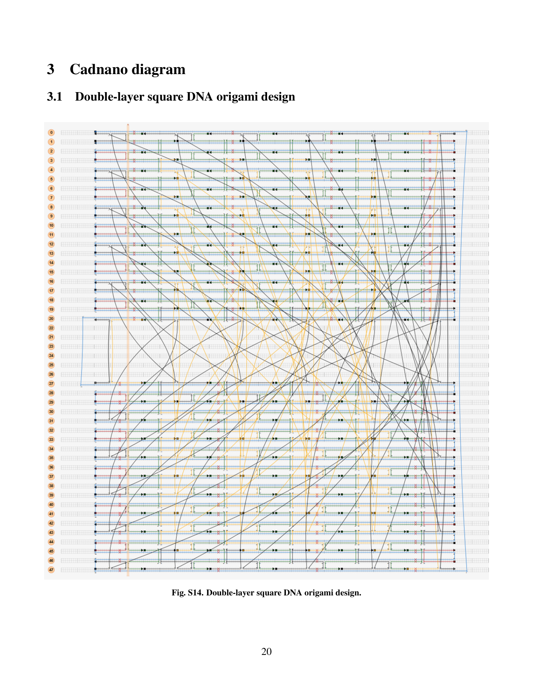 Image-only score: 60 image source | available SI Table S1, PDF pp.22–25 Published sequence list located; sequence-to-topology equivalence has not been validated. | AFM Surface images show tile/cargo placement; compare projected tile dimensions and cargo-position distributions. Bulk fluorescence kinetics are functional evidence, not 3D structural data. characterization source | not_located_in_checked_sources SI Figs. S7, S10–S11; AFM methods in SI section 2.9 published_figure_collection | No matching original verified | Full map and helix labels; long bridging strands overlap. No sequence-level annotations in this image. Image-only score now requires full target coverage and resolvable scaffold, staple ends, base register/indels and helix mapping; sequence letters and extra views earn no independent bonus. |
| D002 reviewed_in_scope | Programmable disorder in random DNA tilings 10.1038/nnano.2016.256 2016-11-28 | Square tile, strong–weak bridge staples Family: Square tile, strong–weak bridge staples | square Square tile conventional caDNAno path grid, with explicit bridge-staple variants in SI section S10. | 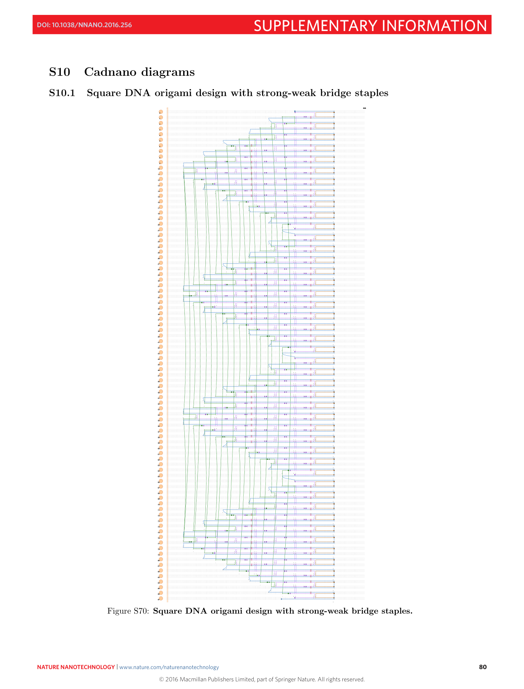 Image-only score: 60 image source | available SI Table S1 (strong–weak), pp.82–85; Table S2 (strong–strong), pp.86–89; edge variants Tables S3 onward Published sequence list located; sequence-to-topology equivalence has not been validated. | AFM AFM measures surface-bound tile arrays and pattern statistics; compare 2D tiling arrangements, not solution-state 3D density. characterization source | not_located_in_checked_sources Main figures and SI; SI section S1.2 published_figure_collection | No matching original verified | Complete vector routing map with colored staples and helix labels; cross-section absent. Image-only score now requires full target coverage and resolvable scaffold, staple ends, base register/indels and helix mapping; sequence letters and extra views earn no independent bonus. |
| D003 reviewed_in_scope | Programmable disorder in random DNA tilings 10.1038/nnano.2016.256 2016-11-28 | Square tile, strong–strong bridge staples Family: Square tile, strong–strong bridge staples | square Square tile conventional caDNAno path grid, with explicit bridge-staple variants in SI section S10. | 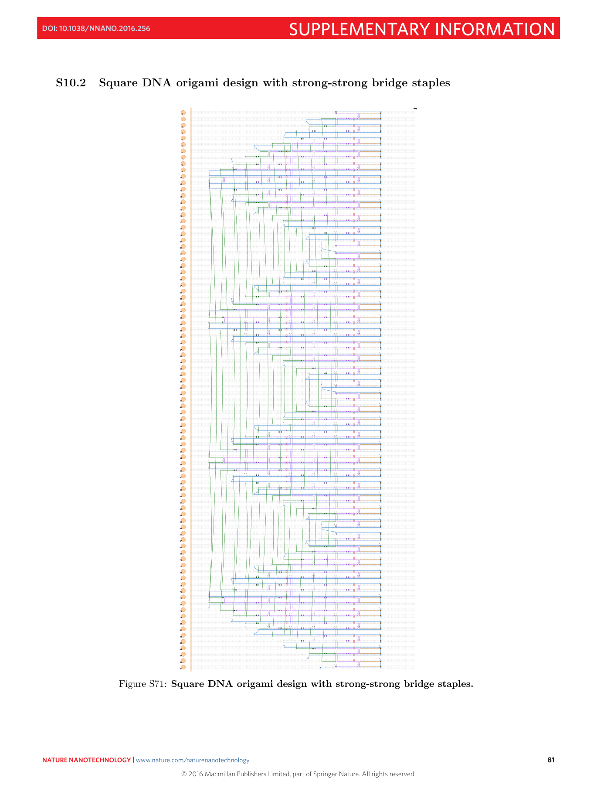 Image-only score: 60 image source | available SI Table S2 (strong–strong), pp.86–89, plus Table S4 (44 unextended stacking-edge staples), p.91 D003 strong–strong variant with unextended stacking edges: all 210 Table S2/S4 sequences match the recovered Fig. S71 routes (2026-11-04). Native feature replay verified; rigid panel geometry retains junction strain and is not simulation-equilibrated. See recovery/d003_20261104.json. | AFM AFM measures surface-bound tile arrays and pattern statistics; compare 2D tiling arrangements, not solution-state 3D density. characterization source | not_located_in_checked_sources Main figures and SI; SI section S1.2 published_figure_collection | No matching original verified | Complete vector routing map with colored staples and helix labels; cross-section absent. Image-only score now requires full target coverage and resolvable scaffold, staple ends, base register/indels and helix mapping; sequence letters and extra views earn no independent bonus. |
| D004 reviewed_in_scope | Programmable molecular recognition based on the geometry of DNA nanostructures 10.1038/nchem.1070 2011-07-10 | Edge-shape origami; partial routing screenshot Family: Edge-shape origami; partial routing screenshot | square SI p.15 explicitly identifies modified square-lattice caDNAno. | 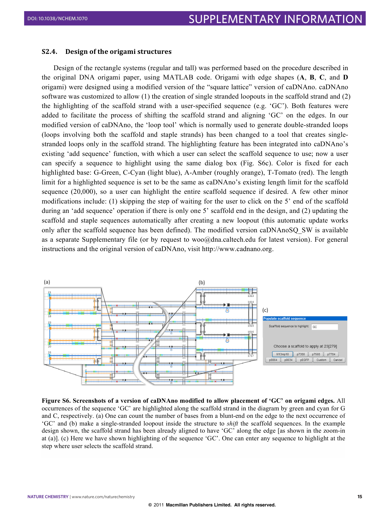 Image-only score: 9 image source | paper_lists_available_variant_unmatched SI sequence lists and corner variants, pp.43–61 Staple lists exist in the paper, but the conceptual crop is not assigned to a unique full design. No complete image-to-list match claimed. | AFM Paper-level evidence for assembled tiles/chains. The catalog crop is conceptual and has not been matched to a specific measured tile variant. characterization source | not_located_in_checked_sources Main figures and SI wide-field AFM panels, including Fig. S15 published_figure_collection | Corner_origami_with_edge_shapes,reversed_polarity-scaf_M13mp18_from_5561.cdn Corner_origami_with_edge_shapes-scaf_M13mp18_from_5560.cdn Corner_origami_with_straight_edges-scaf_m13mp18_from_5560.cdn Origami_A-scaf_M13mp18_from_5558.cdn Origami_B-scaf_M13mp18_from_5558.cdn Origami_C-scaf_M13mp18_from_5626.cdn Origami_D-scaf_M13mp18_from_5558.cdn | Conceptual/partial illustration, not a complete reconstruction specification. Missing full-object routing cannot be recovered by counting additional panels or slice/3D views. Capped at 15/100. |
| D005 reviewed_in_scope | Folding DNA into Twisted and Curved Nanoscale Shapes 10.1126/science.1174251 2009-08-07 | 10 × 6 right-twisted bundle Family: 10 × 6 right-twisted bundle | honeycomb Visible cross-section and routing grid in the cited image. | 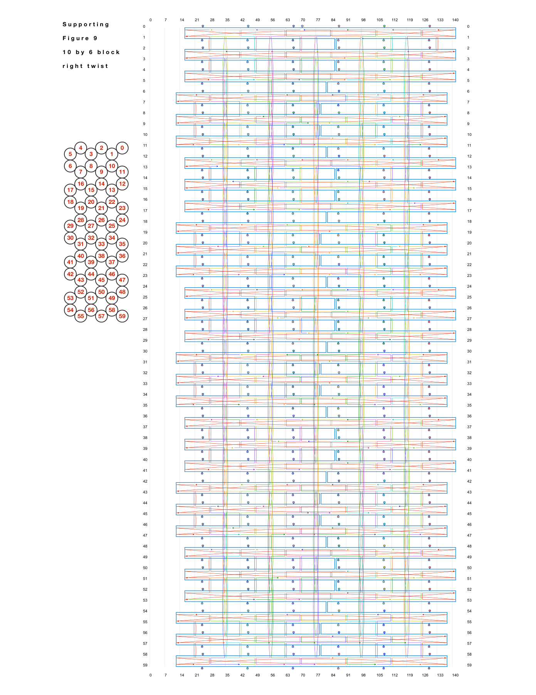 Image-only score: 100 image source | available Supporting sequence list: right-twisted 10×6 p.37 Published sequence list located; sequence-to-topology equivalence has not been validated. | negative-stain TEM Projected twist, bundle shape and bend-angle distributions; select the same scaffold and insertion/deletion variant and account for staining/drying. characterization source | not_located_in_checked_sources Main Figs. 1–3 and supporting micrographs published_figure_collection | monolith_right_twist.json | Full colored routing, numeric coordinates and honeycomb slice; insertion/deletion marks visible. Image-only score now requires full target coverage and resolvable scaffold, staple ends, base register/indels and helix mapping; sequence letters and extra views earn no independent bonus. |
| D006 reviewed_in_scope | Folding DNA into Twisted and Curved Nanoscale Shapes 10.1126/science.1174251 2009-08-07 | 3 × 6 straight bundle Family: 3 × 6 straight bundle | honeycomb Visible cross-section and routing grid in the cited image. | 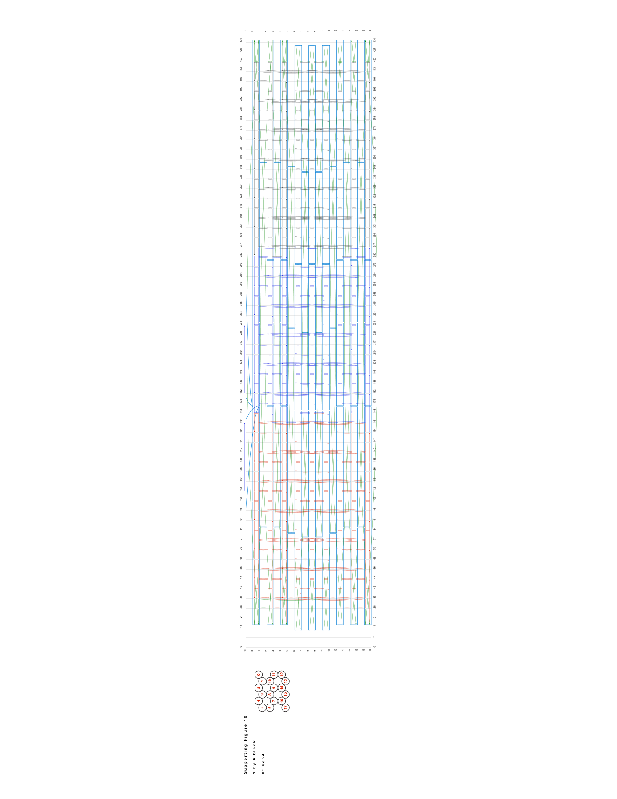 Image-only score: 98 image source | available Supporting sequence list: 3×6 0-degree bend p.39 Published sequence list located; sequence-to-topology equivalence has not been validated. | negative-stain TEM Projected twist, bundle shape and bend-angle distributions; select the same scaffold and insertion/deletion variant and account for staining/drying. characterization source | not_located_in_checked_sources Main Figs. 1–3 and supporting micrographs published_figure_collection | protractor_0_v3.json | Complete routing and slice; narrow drawing requires zooming the source PDF. Image-only score now requires full target coverage and resolvable scaffold, staple ends, base register/indels and helix mapping; sequence letters and extra views earn no independent bonus. |
| D007 reviewed_in_scope | Self-assembly of DNA into nanoscale three-dimensional shapes 10.1038/nature08016 2009-05-21 | Monolith Family: Monolith | honeycomb Visible cross-section and routing grid in the cited image. | 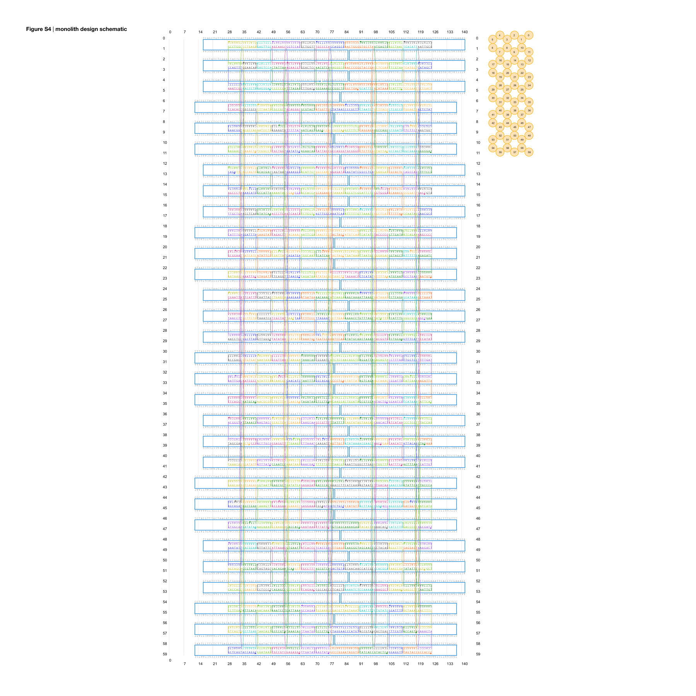 Image-only score: 100 image source | available SI named-object staple list, PDF p.12 Published sequence list located; sequence-to-topology equivalence has not been validated. | negative-stain TEM Compare projected dimensions and folding morphology for the named object. Genie-bottle pEGFP and p7308 scaffolds have distinct sequence lists. characterization source | not_located_in_checked_sources Main Fig. 2 and SI microscopy published_figure_collection | monolith.json | Complete colored caDNAno routing with helix/base indices and cross-sectional slice views. Image-only score now requires full target coverage and resolvable scaffold, staple ends, base register/indels and helix mapping; sequence letters and extra views earn no independent bonus. |
| D008 reviewed_in_scope | Self-assembly of DNA into nanoscale three-dimensional shapes 10.1038/nature08016 2009-05-21 | Square nut Family: Square nut | honeycomb Visible cross-section and routing grid in the cited image. | 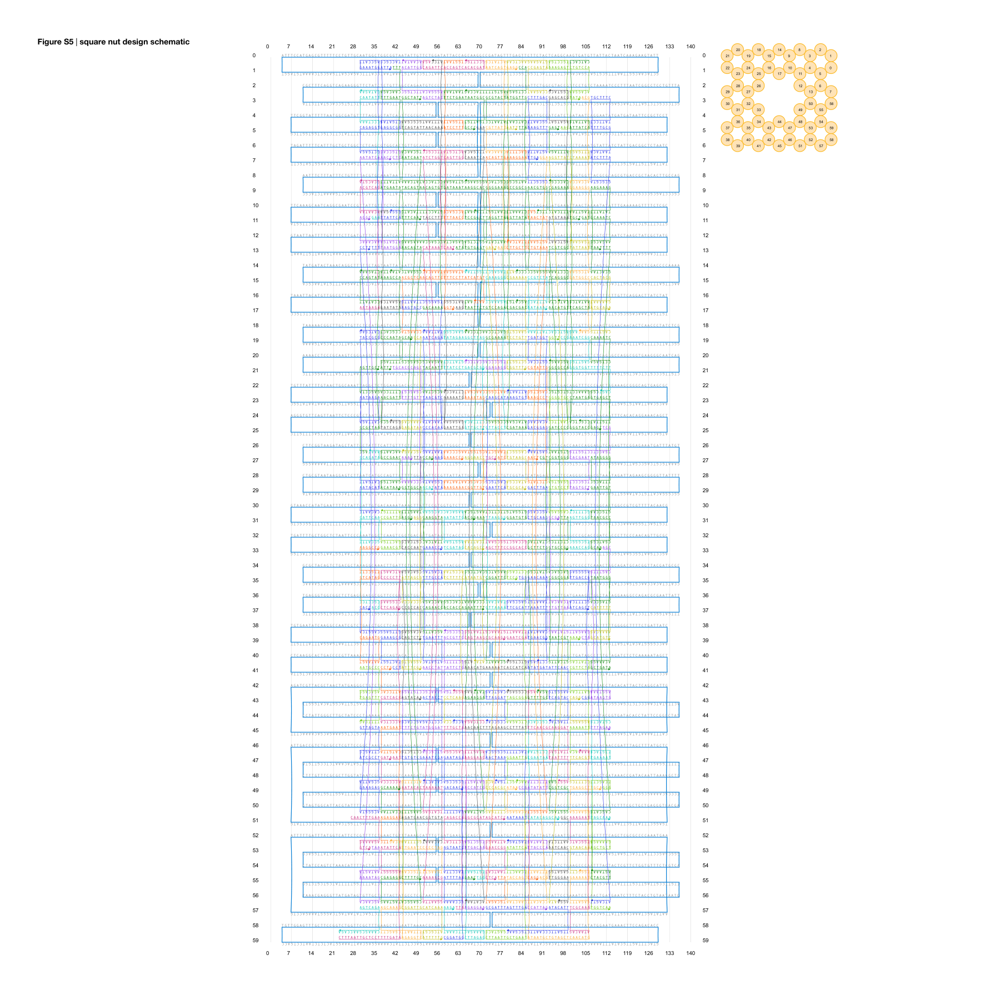 Image-only score: 100 image source | available SI named-object staple list, PDF p.13 Published sequence list located; sequence-to-topology equivalence has not been validated. | negative-stain TEM Compare projected dimensions and folding morphology for the named object. Genie-bottle pEGFP and p7308 scaffolds have distinct sequence lists. characterization source | not_located_in_checked_sources Main Fig. 2 and SI microscopy published_figure_collection | squarenut.json | Complete colored caDNAno routing with helix/base indices and cross-sectional slice views. Image-only score now requires full target coverage and resolvable scaffold, staple ends, base register/indels and helix mapping; sequence letters and extra views earn no independent bonus. |
| D009 reviewed_in_scope | Self-assembly of DNA into nanoscale three-dimensional shapes 10.1038/nature08016 2009-05-21 | Railed bridge Family: Railed bridge | honeycomb Visible cross-section and routing grid in the cited image. | 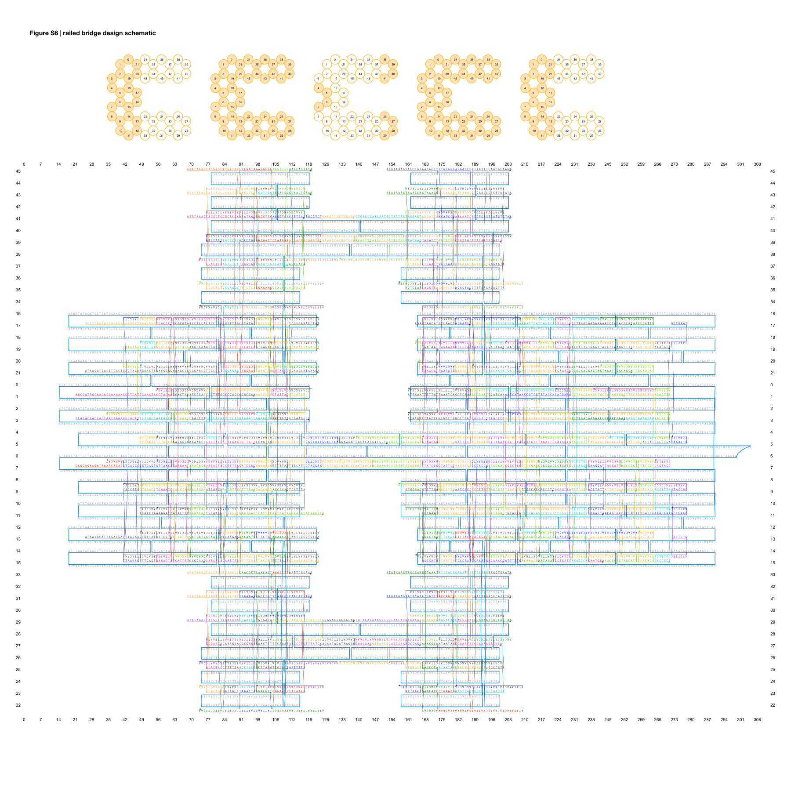 Image-only score: 84 image source | available SI named-object staple list, PDF p.14 Published sequence list located; sequence-to-topology equivalence has not been validated. | negative-stain TEM Compare projected dimensions and folding morphology for the named object. Genie-bottle pEGFP and p7308 scaffolds have distinct sequence lists. characterization source | not_located_in_checked_sources Main Fig. 2 and SI microscopy published_figure_collection | railedbridge.json | Complete colored caDNAno routing with helix/base indices and cross-sectional slice views. Image-only score now requires full target coverage and resolvable scaffold, staple ends, base register/indels and helix mapping; sequence letters and extra views earn no independent bonus. |
| D010 reviewed_in_scope | Self-assembly of DNA into nanoscale three-dimensional shapes 10.1038/nature08016 2009-05-21 | Slotted cross Family: Slotted cross | honeycomb Visible cross-section and routing grid in the cited image. | 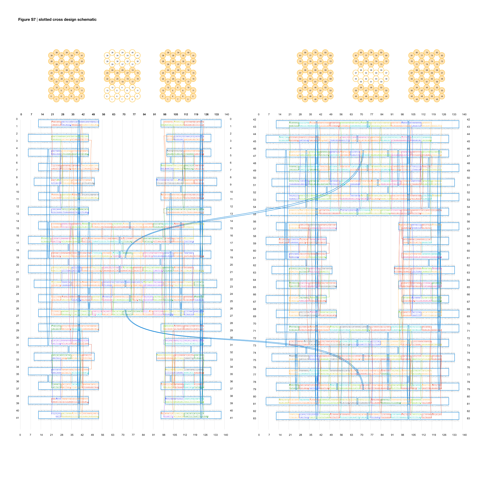 Image-only score: 84 image source | available SI named-object staple list, PDF p.15 Published sequence list located; sequence-to-topology equivalence has not been validated. | negative-stain TEM Compare projected dimensions and folding morphology for the named object. Genie-bottle pEGFP and p7308 scaffolds have distinct sequence lists. characterization source | not_located_in_checked_sources Main Fig. 2 and SI microscopy published_figure_collection | slottedcross.json | Complete colored caDNAno routing with helix/base indices and cross-sectional slice views. Image-only score now requires full target coverage and resolvable scaffold, staple ends, base register/indels and helix mapping; sequence letters and extra views earn no independent bonus. |
| D011 reviewed_in_scope | Self-assembly of DNA into nanoscale three-dimensional shapes 10.1038/nature08016 2009-05-21 | Stacked cross Family: Stacked cross | honeycomb Visible cross-section and routing grid in the cited image. | 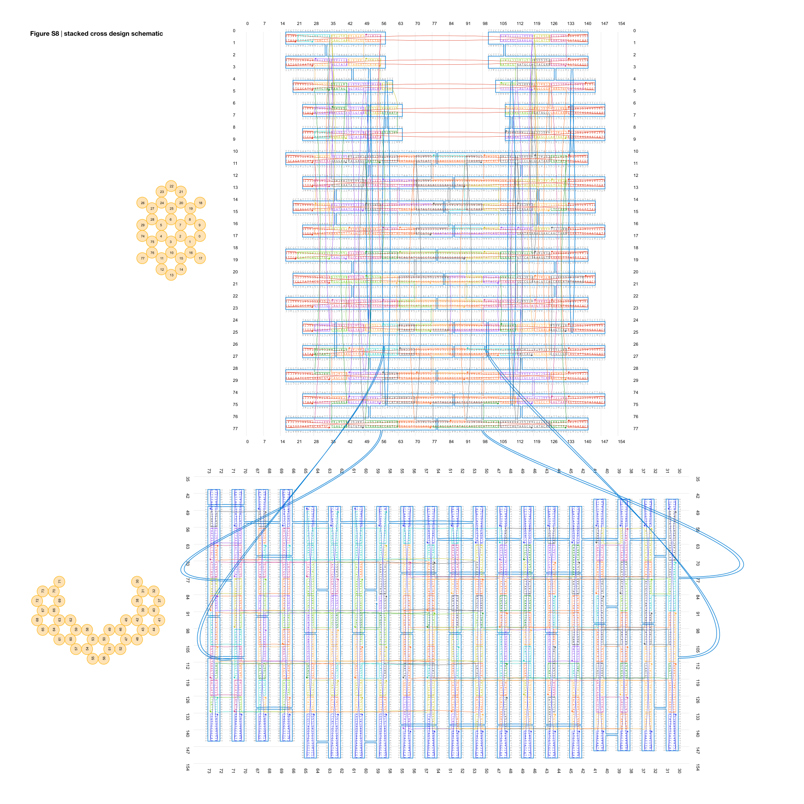 Image-only score: 84 image source | available SI named-object staple list, PDF p.16 Published sequence list located; sequence-to-topology equivalence has not been validated. | negative-stain TEM Compare projected dimensions and folding morphology for the named object. Genie-bottle pEGFP and p7308 scaffolds have distinct sequence lists. characterization source | not_located_in_checked_sources Main Fig. 2 and SI microscopy published_figure_collection | stackedcross.json | Complete colored caDNAno routing with helix/base indices and cross-sectional slice views. Image-only score now requires full target coverage and resolvable scaffold, staple ends, base register/indels and helix mapping; sequence letters and extra views earn no independent bonus. |
| D012 reviewed_in_scope | Self-assembly of DNA into nanoscale three-dimensional shapes 10.1038/nature08016 2009-05-21 | Genie bottle / double gear Family: Genie bottle / double gear | honeycomb Visible cross-section and routing grid in the cited image. | 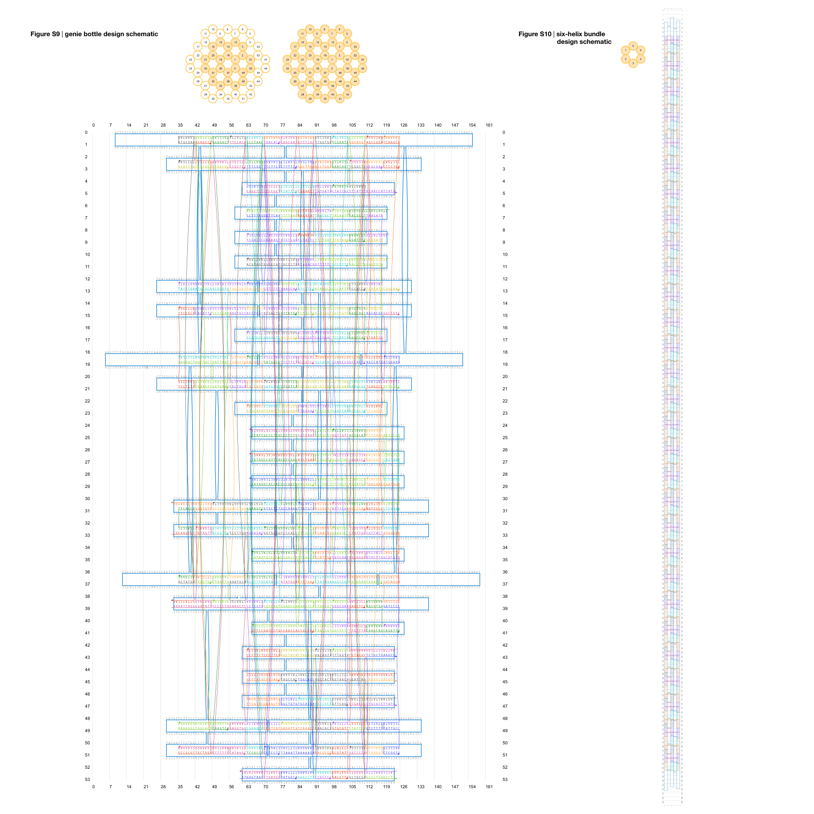 Image-only score: 84 image source | available SI named-object staple list, PDF p.17–18 (pEGFP / p7308 scaffold variants) Published sequence list located; sequence-to-topology equivalence has not been validated. | negative-stain TEM Compare projected dimensions and folding morphology for the named object. Genie-bottle pEGFP and p7308 scaffolds have distinct sequence lists. characterization source | not_located_in_checked_sources Main Fig. 2 and SI microscopy published_figure_collection | doublegear.json | Complete colored caDNAno routing with helix/base indices and cross-sectional slice views. Image-only score now requires full target coverage and resolvable scaffold, staple ends, base register/indels and helix mapping; sequence letters and extra views earn no independent bonus. |
| D013 reviewed_in_scope | Rapid prototyping of 3D DNA-origami shapes with caDNAno 10.1093/nar/gkp436 2009-06-16 | 18-helix demonstration object Family: 18-helix demonstration object | honeycomb Visible cross-section and routing grid in the cited image. | 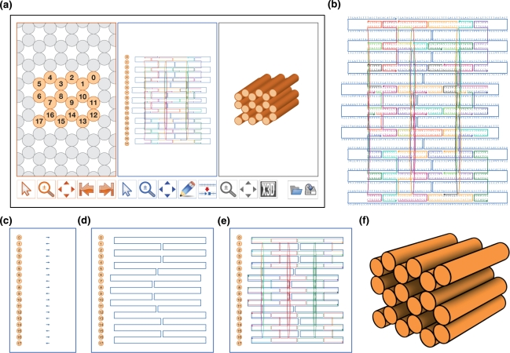 Image-only score: 11 image source | not_verified_for_this_illustration Main Fig. 1 teaching example; exact 18HB staple list not located Paper-wide sequence/design availability for other block motifs does not establish a staple list for this illustrated target. | negative-stain TEM (other designs in paper) No experimental image match established for the 18-helix tutorial object shown in the catalog. Do not transfer block-series TEM evidence to that illustration. characterization source | not_located_in_checked_sources Main Fig. 2, rectangular-block series published_figures | No matching original verified | Conceptual/partial illustration, not a complete reconstruction specification. Missing full-object routing cannot be recovered by counting additional panels or slice/3D views. Capped at 15/100. |
| D014 reviewed_in_scope | A large size-selective DNA nanopore with sensing applications 10.1038/s41467-019-13284-1 2019-12-11 | Channel-and-flap nanopore Family: Channel-and-flap nanopore | honeycomb Visible cross-section and routing grid in the cited image. | 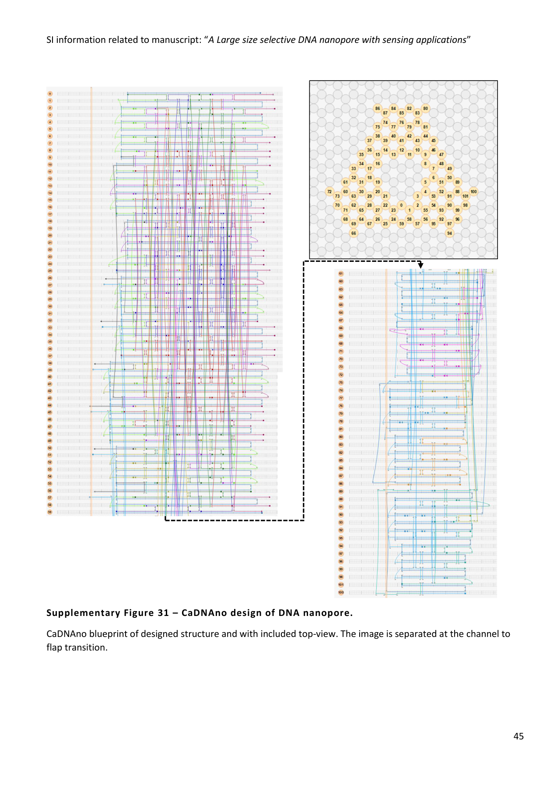 Image-only score: 79 image source | available Supplementary Table 6, PDF pp.46–49 Published sequence list located; sequence-to-topology equivalence has not been validated. Sources and downloaded supplementsPMC6906287-41467_2019_13284_MOESM2_ESM.pdf · sourcePMC6906287-41467_2019_13284_MOESM1_ESM.pdf · sourcePMC6906287-41467_2019_13284_MOESM2_ESM.pdf · source PMC6906287-41467_2019_13284_MOESM4_ESM.pdf · source PMC6906287-41467_2019_13284_MOESM5_ESM.pdf · source PMC6906287-41467_2019_13284_MOESM1_ESM.pdf · source PMC6906287-41467_2019_13284_MOESM2_ESM.pdf · source PMC6906287-41467_2019_13284_MOESM4_ESM.pdf · source PMC6906287-41467_2019_13284_MOESM5_ESM.pdf · source | negative-stain TEM; 2D class averages; cryo-EM micrographs Compare pore dimensions, lumen and flap states. Cryo-EM is limited micrograph characterization here, not a verified deposited 3D reconstruction. Confocal/TIRF leak assays measure function. characterization source | not_located_in_checked_sources Main Fig. 2; SI Figs. 6–10 and 12 published_figure_collection Supplementary video 1: liposome TIRF / stage-drift correction supplementary_movie | No matching original verified | Full split routing map and honeycomb slice; split-to-split connectivity needs careful tracing. Image-only score now requires full target coverage and resolvable scaffold, staple ends, base register/indels and helix mapping; sequence letters and extra views earn no independent bonus. |
| D015 reviewed_in_scope | Control of enzyme reactions by a reconfigurable DNA nanovault 10.1038/s41467-017-01072-8 2017-10-19 | Reconfigurable DNA nanovault Family: Reconfigurable DNA nanovault | honeycomb Visible cross-section and routing grid in the cited image. | 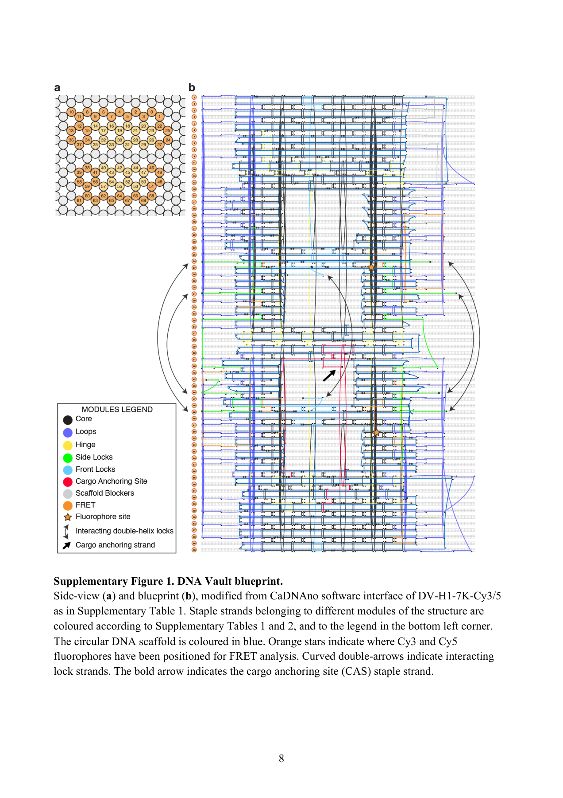 Image-only score: 79 image source | available Supplementary Table 2, PDF pp.23–30 Published sequence list located; sequence-to-topology equivalence has not been validated. Sources and downloaded supplementsPMC5648847-41467_2017_1072_MOESM1_ESM.pdf · sourcePMC5648847-41467_2017_1072_MOESM1_ESM.pdf · sourcePMC5648847-41467_2017_1072_MOESM1_ESM.pdf · source | uranyl-acetate-stained TEM; FRET TEM resolves open/closed vault morphology; FRET provides an ensemble distance proxy. Methods call the TEM preparation positive staining; not relabeled as cryo-EM or negative staining. characterization source | not_located_in_checked_sources Main Fig. 2; SI Figs. 6–7 published_figure_collection | No matching original verified | Full path and slice, colored functional modules and anchors; long connecting strands obscure some crossings. Image-only score now requires full target coverage and resolvable scaffold, staple ends, base register/indels and helix mapping; sequence letters and extra views earn no independent bonus. |
| D016 reviewed_in_scope | A Quick-responsive DNA Nanotechnology Device for Bio-molecular Homeostasis Regulation 10.1038/srep31379 2016-08-10 | Nano-finger device Family: Nano-finger device | honeycomb Visible cross-section and routing grid in the cited image. | 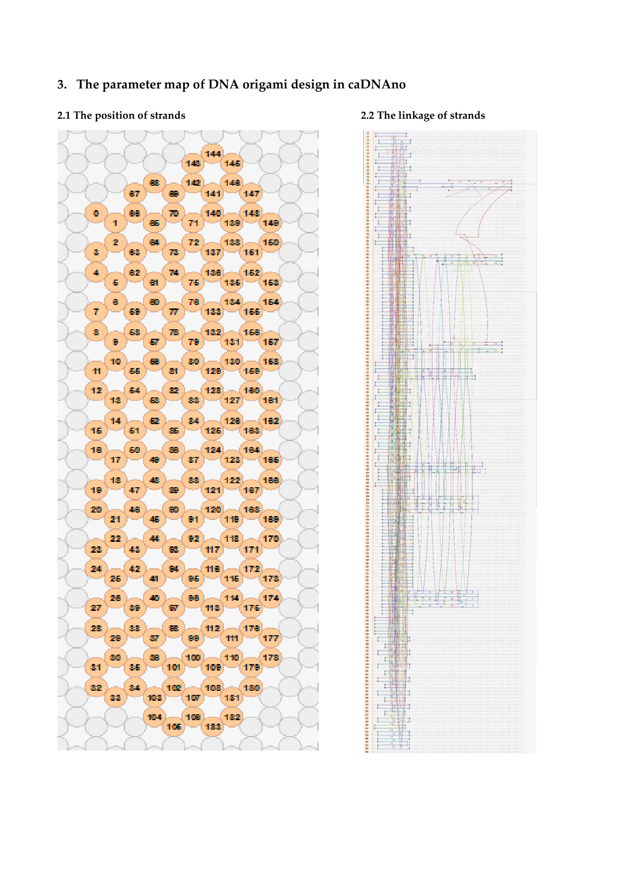 Image-only score: 32 image source | available SI sections 1.1–1.4: tweezers, linkage and platform sequences, PDF pp.1–7 Published sequence list located; sequence-to-topology equivalence has not been validated. Sources and downloaded supplementsPMC4979213-41598_2016_BFsrep31379_MOESM37_ESM.pdf · sourcePMC4979213-41598_2016_BFsrep31379_MOESM37_ESM.pdf · source | AFM; TEM (tweezers component); confocal FRET AFM characterizes the whole device; TEM initially tests its tweezers component. FRET constrains conformational switching, not atomic coordinates. characterization source | not_located_in_checked_sources Main Figs. 2 and 4 published_figure_collection | No matching original verified | Excellent lattice index map but tiny low-contrast path screenshot; conservative recovery priority. Image-only score now requires full target coverage and resolvable scaffold, staple ends, base register/indels and helix mapping; sequence letters and extra views earn no independent bonus. |
| D017 reviewed_in_scope | Magnesium-free self-assembly of multi-layer DNA objects 10.1038/ncomms2095 2012-01-01 | 6-, 8-, and 10-helix bundles Family: 6-, 8-, and 10-helix bundles | honeycomb Main text explicitly assigns 6–24 HB to honeycomb and 100 HB to square. Brick-named 42 HB variants omitted. | 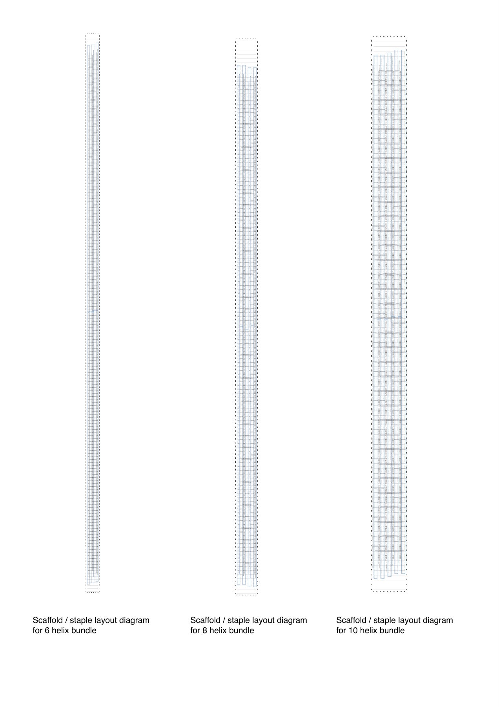 Image-only score: 60 image source | available Supplementary Data 1: DNA sequences for all objects Publisher labels workbook as sequences for all objects. Select the matching helix-count sheet; individual sequences have not been reconciled to the image. Sources and downloaded supplements41467_2012_BFncomms2095_MOESM1190_ESM.xls · sourcePMC3493638-41467_2012_BFncomms2095_MOESM1188_ESM.pdf · sourcePMC3493638-41467_2012_BFncomms2095_MOESM1189_ESM.zip · source PMC3493638-41467_2012_BFncomms2095_MOESM1190_ESM.xls · source PMC3493638-41467_2012_BFncomms2095_MOESM1188_ESM.pdf · source | negative-stain TEM; particle class averages Variant-specific micrographs under sodium/magnesium folding conditions. Match helix count and annealing condition before comparing shapes. characterization source | not_located_in_checked_sources Main Figs. 1–2; SI particle images published_figure_collection | No matching original verified | Complete scaffold/staple grid with base-level annotations; narrow multi-design panels require PDF zoom. Image-only score now requires full target coverage and resolvable scaffold, staple ends, base register/indels and helix mapping; sequence letters and extra views earn no independent bonus. |
| D018 reviewed_in_scope | Magnesium-free self-assembly of multi-layer DNA objects 10.1038/ncomms2095 2012-01-01 | 12-, 18-, and 24-helix bundles Family: 12-, 18-, and 24-helix bundles | honeycomb Main text explicitly assigns 6–24 HB to honeycomb and 100 HB to square. Brick-named 42 HB variants omitted. | 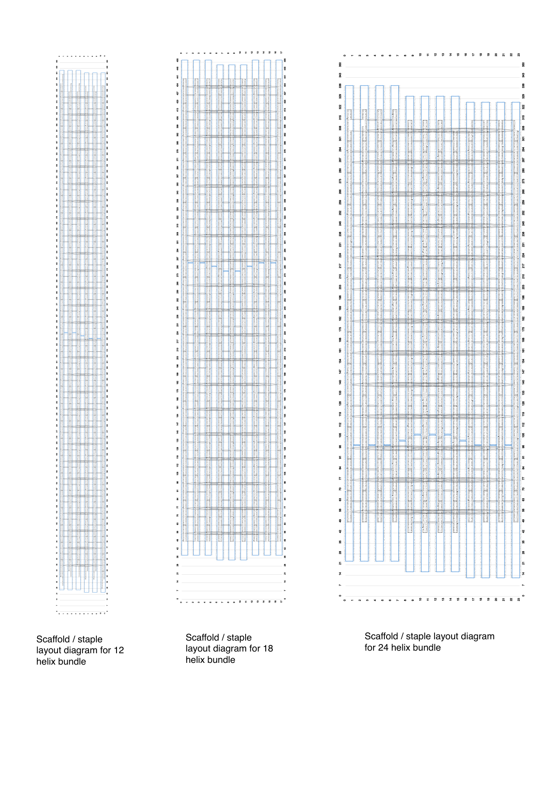 Image-only score: 60 image source | available Supplementary Data 1: DNA sequences for all objects Publisher labels workbook as sequences for all objects. Select the matching helix-count sheet; individual sequences have not been reconciled to the image. Sources and downloaded supplements41467_2012_BFncomms2095_MOESM1190_ESM.xls · sourcePMC3493638-41467_2012_BFncomms2095_MOESM1188_ESM.pdf · sourcePMC3493638-41467_2012_BFncomms2095_MOESM1189_ESM.zip · source PMC3493638-41467_2012_BFncomms2095_MOESM1190_ESM.xls · source PMC3493638-41467_2012_BFncomms2095_MOESM1188_ESM.pdf · source | negative-stain TEM; particle class averages Variant-specific micrographs under sodium/magnesium folding conditions. Match helix count and annealing condition before comparing shapes. characterization source | not_located_in_checked_sources Main Figs. 1–2; SI particle images published_figure_collection | No matching original verified | Complete scaffold/staple grid with base-level annotations; narrow multi-design panels require PDF zoom. Image-only score now requires full target coverage and resolvable scaffold, staple ends, base register/indels and helix mapping; sequence letters and extra views earn no independent bonus. |
| D019 reviewed_in_scope | Magnesium-free self-assembly of multi-layer DNA objects 10.1038/ncomms2095 2012-01-01 | 100-helix bundle Family: 100-helix bundle | square Main text explicitly assigns 6–24 HB to honeycomb and 100 HB to square. Brick-named 42 HB variants omitted. | 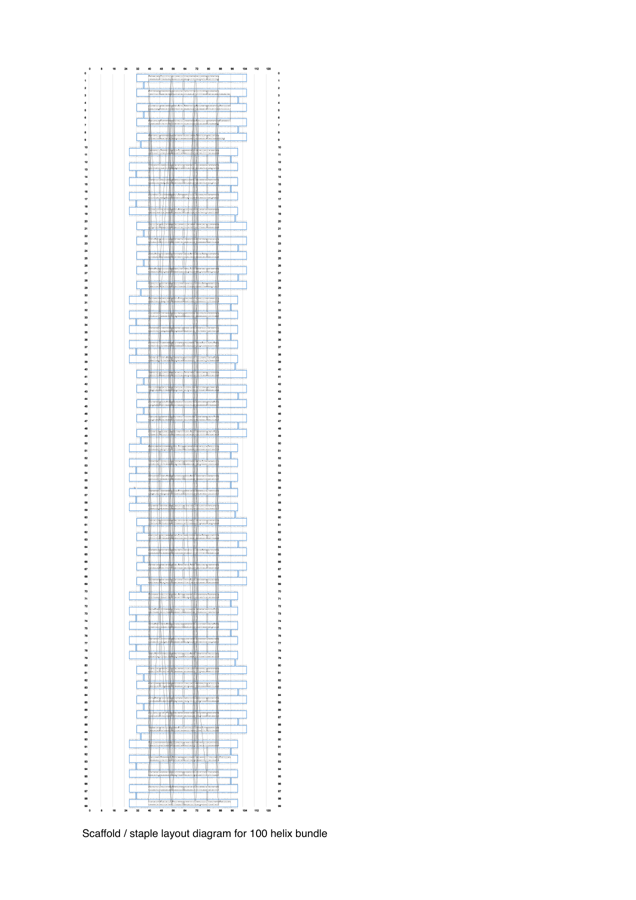 Image-only score: 60 image source | available Supplementary Data 1: DNA sequences for all objects Publisher labels workbook as sequences for all objects. Select the matching helix-count sheet; individual sequences have not been reconciled to the image. Sources and downloaded supplements41467_2012_BFncomms2095_MOESM1190_ESM.xls · sourcePMC3493638-41467_2012_BFncomms2095_MOESM1188_ESM.pdf · sourcePMC3493638-41467_2012_BFncomms2095_MOESM1189_ESM.zip · source PMC3493638-41467_2012_BFncomms2095_MOESM1190_ESM.xls · source PMC3493638-41467_2012_BFncomms2095_MOESM1188_ESM.pdf · source | negative-stain TEM; particle class averages Variant-specific micrographs under sodium/magnesium folding conditions. Match helix count and annealing condition before comparing shapes. characterization source | not_located_in_checked_sources Main Figs. 1–2; SI particle images published_figure_collection | No matching original verified | Complete scaffold/staple grid with base-level annotations; narrow multi-design panels require PDF zoom. Image-only score now requires full target coverage and resolvable scaffold, staple ends, base register/indels and helix mapping; sequence letters and extra views earn no independent bonus. |
| D020 reviewed_in_scope | Quantifying quality in DNA self-assembly 10.1038/ncomms4691 2014-04-22 | 42-helix bundle, zero pseudo-defects Family: 42-helix bundle, zero pseudo-defects | honeycomb CaDNAno routing uses standard honeycomb 7-base crossover grid; 42-HB multilayer layout. | 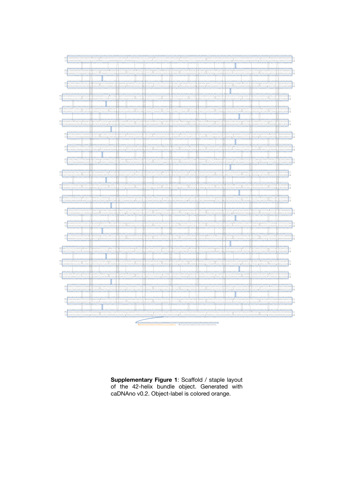 Image-only score: 60 image source | available Supplementary Table 1, PDF pp.38–42: 42HB sequences Published sequence list located; sequence-to-topology equivalence has not been validated. Sources and downloaded supplementsPMC3997801-41467_2014_BFncomms4691_MOESM86_ESM.pdf · sourcePMC3997801-41467_2014_BFncomms4691_MOESM86_ESM.pdf · sourcePMC3997801-41467_2014_BFncomms4691_MOESM86_ESM.pdf · source | negative-stain TEM; averaged particle projections Zero-pseudo-defect and omitted-staple variants have separate image sets. TEM cannot resolve all internal defects; the fluorescent defect assay is complementary, not imaging density. characterization source | not_located_in_checked_sources Main Fig. 1; SI Figs. 4–9 published_figure_collection | No matching original verified | Full route, base labels and nucleotide sequences retained in vector source. Image-only score now requires full target coverage and resolvable scaffold, staple ends, base register/indels and helix mapping; sequence letters and extra views earn no independent bonus. |
| D021 reviewed_in_scope | Molecular transport through large-diameter DNA nanopores 10.1038/ncomms12787 2016-09-23 | Pin pore Family: Pin pore | honeycomb Visible cross-section and routing grid in the cited image. | 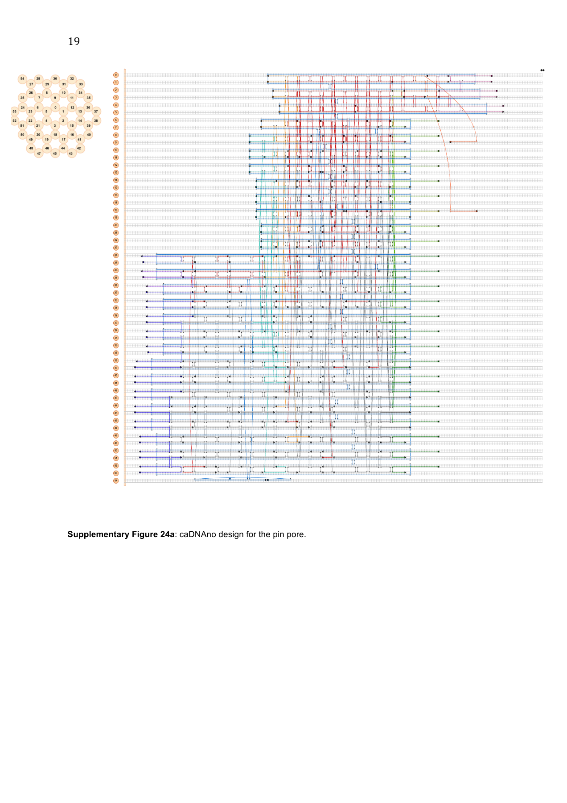 Image-only score: 85 image source | available Supplementary Dataset 1: Pin pore sequence table Published sequence list located; sequence-to-topology equivalence has not been validated. Sources and downloaded supplements41467_2016_BFncomms12787_MOESM1905_ESM.docx · sourcePMC5036142-41467_2016_BFncomms12787_MOESM1904_ESM.pdf · sourcePMC5036142-41467_2016_BFncomms12787_MOESM1905_ESM.docx · source PMC5036142-41467_2016_BFncomms12787_MOESM1911_ESM.pdf · source PMC5036142-41467_2016_BFncomms12787_MOESM1904_ESM.pdf · source PMC5036142-41467_2016_BFncomms12787_MOESM1911_ESM.pdf · source | stained TEM; 2D class averages Match pin versus T pore and lipidation state. Confocal vesicle-flux videos support transport/dynamics, not direct nanoscale 3D shape. characterization source | not_located_in_checked_sources Main Figs. 1, 3–4; SI pore microscopy published_figure_collection | No matching original verified | Full colored routing with cross-sectional lattice view; strong candidate for tracing. Image-only score now requires full target coverage and resolvable scaffold, staple ends, base register/indels and helix mapping; sequence letters and extra views earn no independent bonus. |
| D022 reviewed_in_scope | Molecular transport through large-diameter DNA nanopores 10.1038/ncomms12787 2016-09-23 | T pore Family: T pore | square Visible cross-section and routing grid in the cited image. | 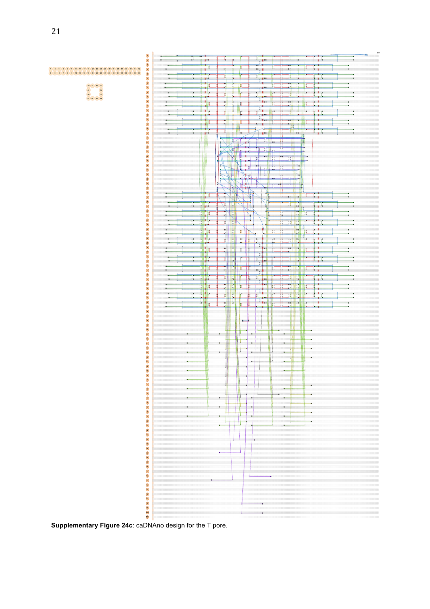 Image-only score: 81 image source | available Supplementary Dataset 1: T pore sequence table Published sequence list located; sequence-to-topology equivalence has not been validated. Sources and downloaded supplements41467_2016_BFncomms12787_MOESM1905_ESM.docx · sourcePMC5036142-41467_2016_BFncomms12787_MOESM1904_ESM.pdf · sourcePMC5036142-41467_2016_BFncomms12787_MOESM1905_ESM.docx · source PMC5036142-41467_2016_BFncomms12787_MOESM1911_ESM.pdf · source PMC5036142-41467_2016_BFncomms12787_MOESM1904_ESM.pdf · source PMC5036142-41467_2016_BFncomms12787_MOESM1911_ESM.pdf · source | stained TEM; 2D class averages Match pin versus T pore and lipidation state. Confocal vesicle-flux videos support transport/dynamics, not direct nanoscale 3D shape. characterization source | not_located_in_checked_sources Main Figs. 1, 3–4; SI pore microscopy published_figure_collection Supplementary movie 1: T-pore confocal transport assay supplementary_movie Supplementary movie 2: T-pore confocal transport assay supplementary_movie Supplementary movie 3: T-pore confocal transport assay supplementary_movie Supplementary movie 4: T-pore confocal transport assay supplementary_movie Supplementary movie 5: T-pore confocal transport assay supplementary_movie | No matching original verified | Full colored routing with cross-sectional lattice view; strong candidate for tracing. Image-only score now requires full target coverage and resolvable scaffold, staple ends, base register/indels and helix mapping; sequence letters and extra views earn no independent bonus. |
| D023 reviewed_in_scope | DNA origami scaffold for studying intrinsically disordered proteins of the nuclear pore complex 10.1038/s41467-018-03313-w 2018-03-02 | DNA ring scaffold Family: DNA ring scaffold | honeycomb Regular 7-base honeycomb route grid in caDNAno; ring built from parallel bundle helices, not a wireframe polyhedron. | 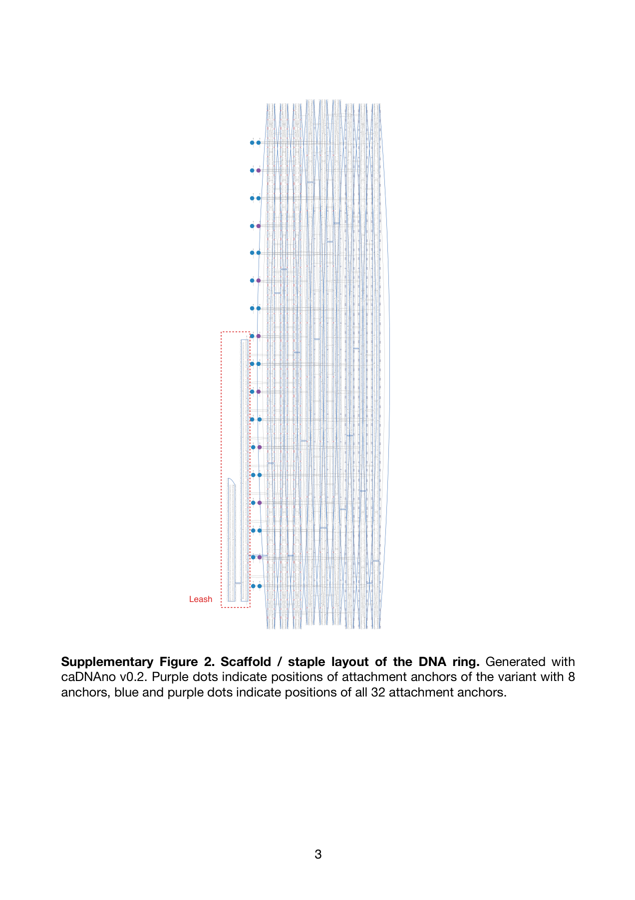 Image-only score: 56 image source | available Supplementary Tables 1–3, PDF pp.16–18 (8-/32-anchor variants) Published sequence list located; sequence-to-topology equivalence has not been validated. | negative-stain TEM; negative-stain tomography; cryo-EM 2D averages; TIRF photobleaching Empty ring / 32-NSP1 / 32-NSP1-S cryo averages use 1663 / 637 / 1051 particles. Compare projected protein densities and radial profiles; the paper already compares these with coarse-grained MD. No public raw stack or 3D map accession verified. characterization source | not_located_in_checked_sources Main Figs. 2–3; SI Figs. 7–10 published_figure_collection | No matching original verified | Complete long route and attachment sites; compressed drawing limits legibility. Image-only score now requires full target coverage and resolvable scaffold, staple ends, base register/indels and helix mapping; sequence letters and extra views earn no independent bonus. |
| D024 reviewed_in_scope | One-step large-scale deposition of salt-free DNA origami nanostructures 10.1038/srep15634 2015-10-23 | 60-helix bundle Family: 60-helix bundle | honeycomb Standard 7-base honeycomb routing repeat in bundle diagram. | 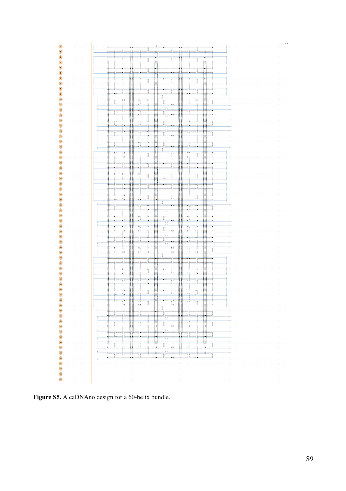 Image-only score: 60 image source | available Supplementary Table S4, PDF pp.10–12; linker sequences Table S2 Published sequence list located; sequence-to-topology equivalence has not been validated. Sources and downloaded supplementsPMC4616047-41598_2015_BFsrep15634_MOESM1_ESM.pdf · sourcePMC4616047-41598_2015_BFsrep15634_MOESM1_ESM.pdf · sourcePMC4616047-41598_2015_BFsrep15634_MOESM1_ESM.pdf · source | TEM; wide-field fluorescence of deposited patterns TEM confirms the 60HB structure. AFM in this paper concerns the separate planar ST/DT designs; fluorescence coating images are not single-particle structure. characterization source | not_located_in_checked_sources SI Fig. S1b and Note 2; main Fig. 4 published_figure_collection | No matching original verified | Whole path grid and helix labels; staples largely monochrome, cross-section not shown. Image-only score now requires full target coverage and resolvable scaffold, staple ends, base register/indels and helix mapping; sequence letters and extra views earn no independent bonus. |
| D025 reviewed_in_scope | Universal computing by DNA origami robots in a living animal 10.1038/nnano.2014.58 2014-04-06 | Barrel robot screenshot Family: Barrel robot screenshot | honeycomb Visible cross-section and routing grid in the cited image. | 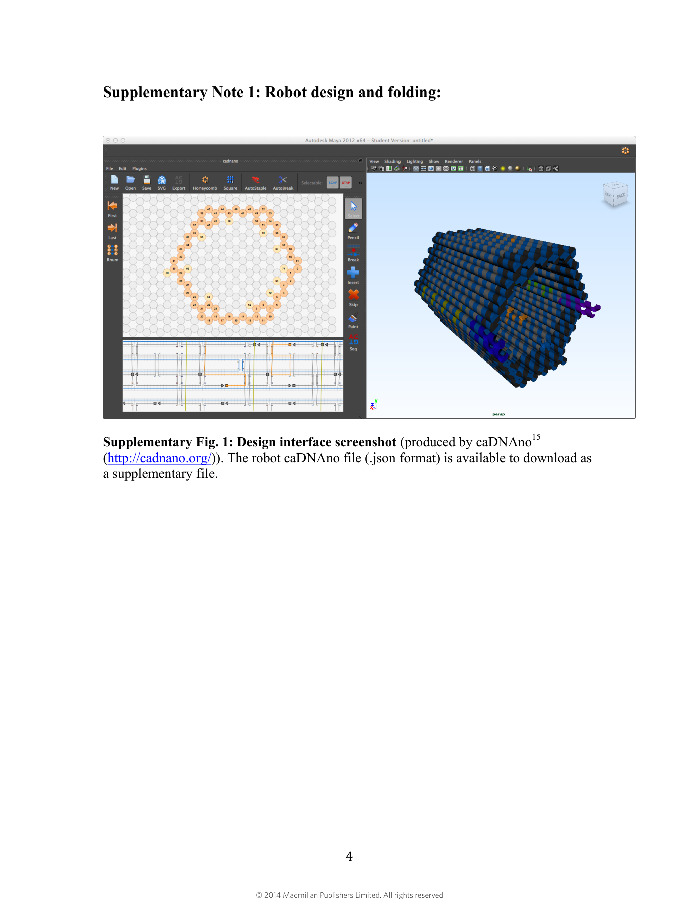 Image-only score: 7 image source | available Supplementary Fig. 3: robot staple sequences, PDF p.8 onward Published sequence list located; sequence-to-topology equivalence has not been validated. Sources and downloaded supplementsPMC4012984-41565_2014_BFnnano201458_MOESM9_ESM.pdf · sourcePMC4012984-41565_2014_BFnnano201458_MOESM9_ESM.pdf · source | AFM AFM supports barrel/robot architectures. Flow cytometry measures logic/function, not a spatial density map; catalog CAD panel is cropped. characterization source | not_located_in_checked_sources Main Fig. 1B; SI characterization published_figure_collection | No matching original verified | Conceptual/partial illustration, not a complete reconstruction specification. Missing full-object routing cannot be recovered by counting additional panels or slice/3D views. Capped at 15/100. |
| D026 reviewed_in_scope | Real-time magnetic actuation of DNA nanodevices via modular integration with stiff micro-levers 10.1038/s41467-018-03601-5 2018-04-13 | Nano-platform Family: Nano-platform | square Platform: two-layer 32-helix rectangle in methods, square-grid routing inferred from map. Hinge: methods explicitly state two 36HB honeycomb bundles. | 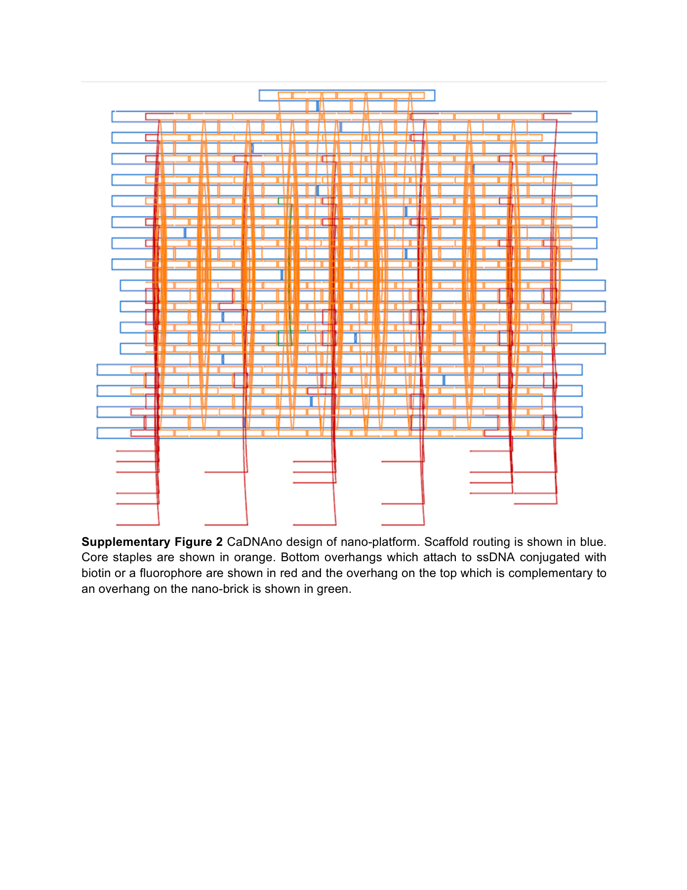 Image-only score: 35 image source | available Supplementary Table 1: platform, PDF p.17 onward Published sequence list located; sequence-to-topology equivalence has not been validated. | AFM; TEM; optical actuation tracking Separate platform and hinge images from the excluded nano-brick. Videos constrain driven assembly trajectories, not equilibrium structural ensembles. characterization source | not_located_in_checked_sources Main Figs. 1 and 3–4; SI Figs. 1 and 5; Supplementary Movies published_figure_collection | No matching original verified | Clear full colored path, but no numbered base/helix grid. The separate nano-brick design is excluded. Image-only score now requires full target coverage and resolvable scaffold, staple ends, base register/indels and helix mapping; sequence letters and extra views earn no independent bonus. |
| D027 reviewed_in_scope | Real-time magnetic actuation of DNA nanodevices via modular integration with stiff micro-levers 10.1038/s41467-018-03601-5 2018-04-13 | Nano-hinge Family: Nano-hinge | honeycomb Platform: two-layer 32-helix rectangle in methods, square-grid routing inferred from map. Hinge: methods explicitly state two 36HB honeycomb bundles. | 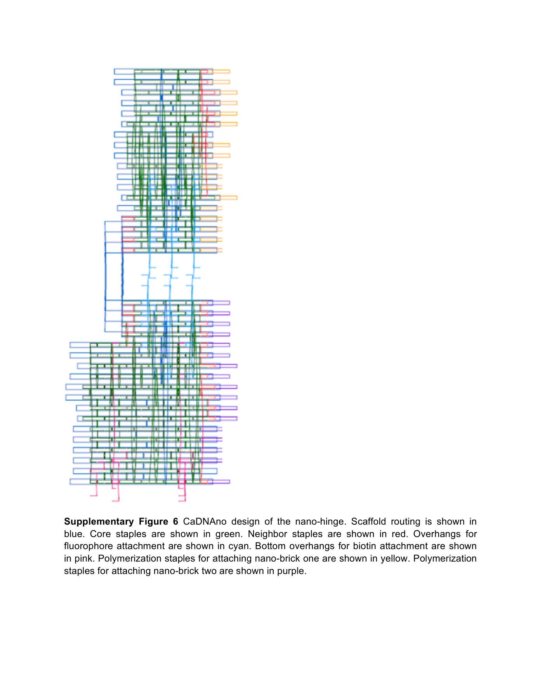 Image-only score: 35 image source | available Supplementary Table 3: hinge, PDF p.25 onward Published sequence list located; sequence-to-topology equivalence has not been validated. | AFM; TEM; optical actuation tracking Separate platform and hinge images from the excluded nano-brick. Videos constrain driven assembly trajectories, not equilibrium structural ensembles. characterization source | not_located_in_checked_sources Main Figs. 1 and 3–4; SI Figs. 1 and 5; Supplementary Movies published_figure_collection | No matching original verified | Clear full colored path, but no numbered base/helix grid. The separate nano-brick design is excluded. Image-only score now requires full target coverage and resolvable scaffold, staple ends, base register/indels and helix mapping; sequence letters and extra views earn no independent bonus. |
| D028 reviewed_in_scope | Folding complex DNA nanostructures from limited sets of reusable sequences 10.1093/nar/gkw208 2016-04-01 | Six-helix antenna variants Family: Six-helix antenna variants | honeycomb Six-helix bundle template in paper-linked repository and conventional honeycomb crossover spacing. | 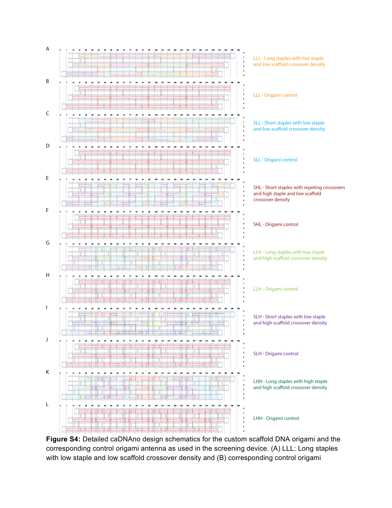 Image-only score: 35 image source | available SI Tables S5–S16: antenna/control variants, pp.25–32; core/asymmetric part Tables S3–S4 Published sequence list located; sequence-to-topology equivalence has not been validated. | negative-stain TEM The shown antennas are components of a larger testing device. Match each LLL/SLL/etc. antenna variant; the 24HB class averages in Fig. 3 are a different design family. characterization source | not_located_in_checked_sources Main Fig. 2C; SI antenna characterization published_figure_collection | 6helix.json | Maps show antenna components/variants, not the complete origami testing device. Component-only coverage; capped at 35/100. |
| D029 reviewed_in_scope | Shifting molecular localization by plasmonic coupling in a single-molecule mirage 10.1038/ncomms13966 2017-01-11 | 12-helix bundle Family: 12-helix bundle | honeycomb Honeycomb slice explicitly visible for 12HB; rectangles use conventional planar square-grid crossover routing. | 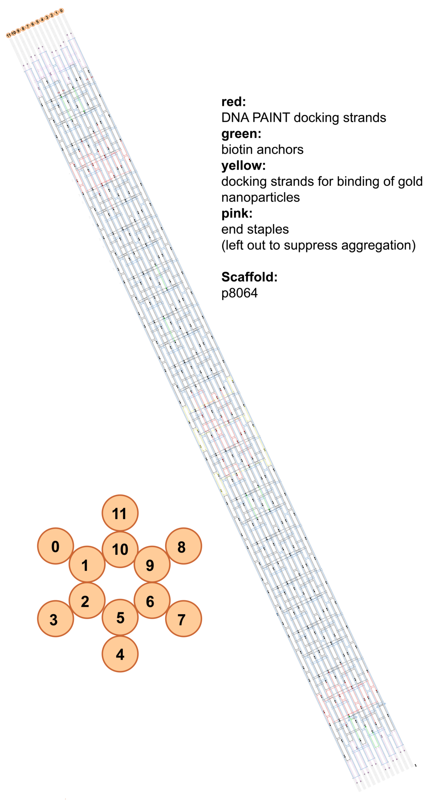 Image-only score: 79 image source | available SI Tables 2–3: 12HB + modifications, pp.7–12 Published sequence list located; sequence-to-topology equivalence has not been validated. | 3D DNA-PAINT super-resolution microscopy 12HB localization marks and rectangle height measurements. Gold-induced localization bias is the measured effect; simulate fluorophore/optical displacement rather than treating localization positions as unbiased DNA coordinates. characterization source | not_located_in_checked_sources Main Figs. 2–3; SI Figs. 1–5 published_figure_collection | No matching original verified | Original high-resolution PNG design map; transparent background must be displayed on white. Image-only score now requires full target coverage and resolvable scaffold, staple ends, base register/indels and helix mapping; sequence letters and extra views earn no independent bonus. |
| D030 reviewed_in_scope | Shifting molecular localization by plasmonic coupling in a single-molecule mirage 10.1038/ncomms13966 2017-01-11 | Rectangle variant (data file 2) Family: Rectangle variant (data file 2) | square Honeycomb slice explicitly visible for 12HB; rectangles use conventional planar square-grid crossover routing. | 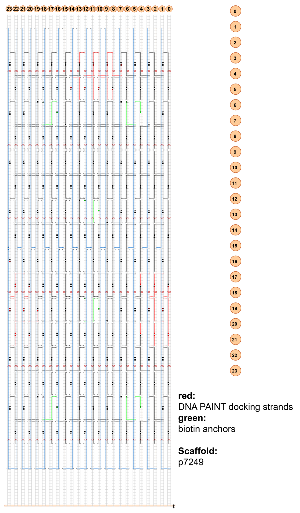 Image-only score: 60 image source | available SI Tables 4–5: rectangle + variant modifications, pp.13–18 Published sequence list located; sequence-to-topology equivalence has not been validated. | 3D DNA-PAINT super-resolution microscopy 12HB localization marks and rectangle height measurements. Gold-induced localization bias is the measured effect; simulate fluorophore/optical displacement rather than treating localization positions as unbiased DNA coordinates. characterization source | not_located_in_checked_sources Main Figs. 2–3; SI Figs. 1–5 published_figure_collection | No matching original verified | Original high-resolution PNG design map; transparent background must be displayed on white. Image-only score now requires full target coverage and resolvable scaffold, staple ends, base register/indels and helix mapping; sequence letters and extra views earn no independent bonus. |
| D031 reviewed_in_scope | Shifting molecular localization by plasmonic coupling in a single-molecule mirage 10.1038/ncomms13966 2017-01-11 | Rectangle variant (data file 3) Family: Rectangle variant (data file 3) | square Honeycomb slice explicitly visible for 12HB; rectangles use conventional planar square-grid crossover routing. | 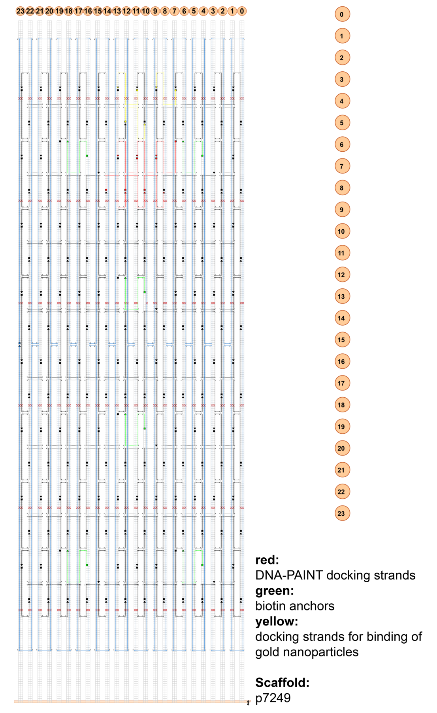 Image-only score: 60 image source | available SI Tables 4–5: rectangle + variant modifications, pp.13–18 Published sequence list located; sequence-to-topology equivalence has not been validated. | 3D DNA-PAINT super-resolution microscopy 12HB localization marks and rectangle height measurements. Gold-induced localization bias is the measured effect; simulate fluorophore/optical displacement rather than treating localization positions as unbiased DNA coordinates. characterization source | not_located_in_checked_sources Main Figs. 2–3; SI Figs. 1–5 published_figure_collection | No matching original verified | Original high-resolution PNG design map; transparent background must be displayed on white. Image-only score now requires full target coverage and resolvable scaffold, staple ends, base register/indels and helix mapping; sequence letters and extra views earn no independent bonus. |
| D032 reviewed_in_scope | Shifting molecular localization by plasmonic coupling in a single-molecule mirage 10.1038/ncomms13966 2017-01-11 | Rectangle variant (data file 4) Family: Rectangle variant (data file 4) | square Honeycomb slice explicitly visible for 12HB; rectangles use conventional planar square-grid crossover routing. | 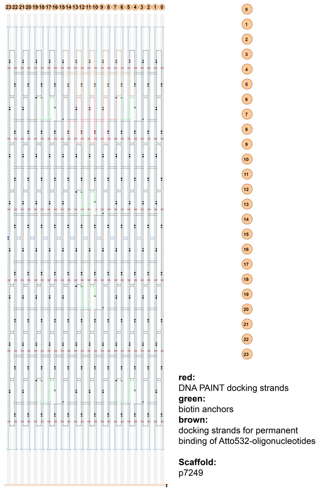 Image-only score: 60 image source | available SI Tables 4–5: rectangle + variant modifications, pp.13–18 Published sequence list located; sequence-to-topology equivalence has not been validated. | 3D DNA-PAINT super-resolution microscopy 12HB localization marks and rectangle height measurements. Gold-induced localization bias is the measured effect; simulate fluorophore/optical displacement rather than treating localization positions as unbiased DNA coordinates. characterization source | not_located_in_checked_sources Main Figs. 2–3; SI Figs. 1–5 published_figure_collection | No matching original verified | Original high-resolution PNG design map; transparent background must be displayed on white. Image-only score now requires full target coverage and resolvable scaffold, staple ends, base register/indels and helix mapping; sequence letters and extra views earn no independent bonus. |
| S001 reviewed_in_scope | Folding DNA to create nanoscale shapes and patterns 10.1038/nature04586 2006-03-16 | Square Family: Square | square / single-layer parallel-helix domains | Image not scored; see source links | publication_material_downloaded_variant_matching_pending Supplementary Fig. S18; PDF page 25 Source availability is not proof of complete core + variant + modified staple coverage. See design-specific notes; sequence-like string counts are retrieval aids only. Sources and downloaded supplementsrothemund2006-s1.pdf · sourcerothemund2006-s2.pdf · sourcerothemund2006-s1.pdf · source rothemund2006-s2.pdf · source | AFM characterization source | not_verified | No matching original verified | Original pre-caDNAno design. Staple sequences inspected in author-hosted supplement. Triangular objects join planar domains; no wireframe edges. Pattern and assembly variants are not counted as new base geometries. |
| S002 reviewed_in_scope | Folding DNA to create nanoscale shapes and patterns 10.1038/nature04586 2006-03-16 | Rectangle Family: Rectangle | square / single-layer parallel-helix domains | Image not scored; see source links | publication_material_downloaded_variant_matching_pending Supplementary Fig. S21; PDF page 28 Source availability is not proof of complete core + variant + modified staple coverage. See design-specific notes; sequence-like string counts are retrieval aids only. Sources and downloaded supplementsrothemund2006-s1.pdf · sourcerothemund2006-s2.pdf · sourcerothemund2006-s1.pdf · source rothemund2006-s2.pdf · source | AFM characterization source | not_verified | No matching original verified | Original pre-caDNAno design. Staple sequences inspected in author-hosted supplement. Triangular objects join planar domains; no wireframe edges. Pattern and assembly variants are not counted as new base geometries. |
| S003 reviewed_in_scope | Folding DNA to create nanoscale shapes and patterns 10.1038/nature04586 2006-03-16 | Five-pointed star Family: Five-pointed star | square / single-layer parallel-helix domains | Image not scored; see source links | publication_material_downloaded_variant_matching_pending Supplementary Fig. S24; PDF page 31 Source availability is not proof of complete core + variant + modified staple coverage. See design-specific notes; sequence-like string counts are retrieval aids only. Sources and downloaded supplementsrothemund2006-s1.pdf · sourcerothemund2006-s2.pdf · sourcerothemund2006-s1.pdf · source rothemund2006-s2.pdf · source | AFM characterization source | not_verified | No matching original verified | Original pre-caDNAno design. Staple sequences inspected in author-hosted supplement. Triangular objects join planar domains; no wireframe edges. Pattern and assembly variants are not counted as new base geometries. |
| S004 reviewed_in_scope | Folding DNA to create nanoscale shapes and patterns 10.1038/nature04586 2006-03-16 | Disk with holes / smiley Family: Disk with holes / smiley | square / single-layer parallel-helix domains | Image not scored; see source links | publication_material_downloaded_variant_matching_pending Supplementary Fig. S28; PDF page 35 Source availability is not proof of complete core + variant + modified staple coverage. See design-specific notes; sequence-like string counts are retrieval aids only. Sources and downloaded supplementsrothemund2006-s1.pdf · sourcerothemund2006-s2.pdf · sourcerothemund2006-s1.pdf · source rothemund2006-s2.pdf · source | AFM characterization source | not_verified | No matching original verified | Original pre-caDNAno design. Staple sequences inspected in author-hosted supplement. Triangular objects join planar domains; no wireframe edges. Pattern and assembly variants are not counted as new base geometries. |
| S005 reviewed_in_scope | Folding DNA to create nanoscale shapes and patterns 10.1038/nature04586 2006-03-16 | Equilateral triangle with rectangular domains Family: Equilateral triangle with rectangular domains | square / single-layer parallel-helix domains | Image not scored; see source links | publication_material_downloaded_variant_matching_pending Supplementary Fig. S31; PDF page 38 Source availability is not proof of complete core + variant + modified staple coverage. See design-specific notes; sequence-like string counts are retrieval aids only. Sources and downloaded supplementsrothemund2006-s1.pdf · sourcerothemund2006-s2.pdf · sourcerothemund2006-s1.pdf · source rothemund2006-s2.pdf · source | AFM characterization source | not_verified | No matching original verified | Original pre-caDNAno design. Staple sequences inspected in author-hosted supplement. Triangular objects join planar domains; no wireframe edges. Pattern and assembly variants are not counted as new base geometries. |
| S006 reviewed_in_scope | Folding DNA to create nanoscale shapes and patterns 10.1038/nature04586 2006-03-16 | Sharp triangle with trapezoidal domains Family: Sharp triangle with trapezoidal domains | square / single-layer parallel-helix domains | Image not scored; see source links | publication_material_downloaded_variant_matching_pending Supplementary Fig. S34; PDF page 41 Source availability is not proof of complete core + variant + modified staple coverage. See design-specific notes; sequence-like string counts are retrieval aids only. Sources and downloaded supplementsrothemund2006-s1.pdf · sourcerothemund2006-s2.pdf · sourcerothemund2006-s1.pdf · source rothemund2006-s2.pdf · source | AFM characterization source | not_verified | No matching original verified | Original pre-caDNAno design. Staple sequences inspected in author-hosted supplement. Triangular objects join planar domains; no wireframe edges. Pattern and assembly variants are not counted as new base geometries. |
| S007 reviewed_in_scope | Folding DNA to create nanoscale shapes and patterns 10.1038/nature04586 2006-03-16 | Tall rectangle / map-pattern substrate Family: Tall rectangle / map-pattern substrate | square / single-layer parallel-helix domains | Image not scored; see source links | publication_material_downloaded_variant_matching_pending Supplementary Fig. S38; PDF page 45 Source availability is not proof of complete core + variant + modified staple coverage. See design-specific notes; sequence-like string counts are retrieval aids only. Sources and downloaded supplementsrothemund2006-s1.pdf · sourcerothemund2006-s2.pdf · sourcerothemund2006-s1.pdf · source rothemund2006-s2.pdf · source | AFM characterization source | not_verified | No matching original verified | Original pre-caDNAno design. Staple sequences inspected in author-hosted supplement. Triangular objects join planar domains; no wireframe edges. Pattern and assembly variants are not counted as new base geometries. |
| S008 reviewed_in_scope | Construction of a novel phagemid to produce custom DNA origami scaffolds. 10.1093/synbio/ysy015 2018-01-01 | 6HB nanotube, 1512-nt scaffold Family: pScaf 6HB | honeycomb | Image not scored; see source links | publication_material_downloaded_variant_matching_pending Paper-linked pScaf repository: 6HB source designs and staple CSVs Source availability is not proof of complete core + variant + modified staple coverage. See design-specific notes; sequence-like string counts are retrieval aids only. Sources and downloaded supplementsdouglaslab__pScaf__3_cadnano_designs__6hb-1512.json · sourcedouglaslab__pScaf__4_staple_sequences__6hb-1512.csv · source | negative-stain TEM characterization source | not_verified | douglaslab__pScaf__3_cadnano_designs__6hb-1512.json · source douglaslab__pScaf__4_staple_sequences__6hb-1512.csv · source | Separate scaffold variant; brick-named objects in the same paper are excluded. |
| S009 reviewed_in_scope | Construction of a novel phagemid to produce custom DNA origami scaffolds. 10.1093/synbio/ysy015 2018-01-01 | 6HB nanotube, 2268-nt scaffold Family: pScaf 6HB | honeycomb | Image not scored; see source links | publication_material_downloaded_variant_matching_pending Paper-linked pScaf repository: 6HB source designs and staple CSVs Source availability is not proof of complete core + variant + modified staple coverage. See design-specific notes; sequence-like string counts are retrieval aids only. Sources and downloaded supplementsdouglaslab__pScaf__3_cadnano_designs__6hb-2268.json · sourcedouglaslab__pScaf__4_staple_sequences__6hb-2268.csv · source | negative-stain TEM characterization source | not_verified | douglaslab__pScaf__3_cadnano_designs__6hb-2268.json · source douglaslab__pScaf__4_staple_sequences__6hb-2268.csv · source | Separate scaffold variant; brick-named objects in the same paper are excluded. |
| S010 reviewed_in_scope | Construction of a novel phagemid to produce custom DNA origami scaffolds. 10.1093/synbio/ysy015 2018-01-01 | 6HB nanotube, 3024-nt scaffold Family: pScaf 6HB | honeycomb | Image not scored; see source links | publication_material_downloaded_variant_matching_pending Paper-linked pScaf repository: 6HB source designs and staple CSVs Source availability is not proof of complete core + variant + modified staple coverage. See design-specific notes; sequence-like string counts are retrieval aids only. Sources and downloaded supplementsdouglaslab__pScaf__3_cadnano_designs__6hb-3024.json · sourcedouglaslab__pScaf__4_staple_sequences__6hb-3024.csv · source | negative-stain TEM characterization source | not_verified | douglaslab__pScaf__3_cadnano_designs__6hb-3024.json · source douglaslab__pScaf__4_staple_sequences__6hb-3024.csv · source | Separate scaffold variant; brick-named objects in the same paper are excluded. |
| S011 reviewed_in_scope | Construction of a novel phagemid to produce custom DNA origami scaffolds. 10.1093/synbio/ysy015 2018-01-01 | Three-scaffold 6HB nanotube trimer Family: pScaf 6HB | honeycomb | Image not scored; see source links | publication_material_downloaded_variant_matching_pending pScaf repository; Fig. 4B–C and connector-staple definitions Source availability is not proof of complete core + variant + modified staple coverage. See design-specific notes; sequence-like string counts are retrieval aids only. Sources and downloaded supplementsdouglaslab__pScaf__3_cadnano_designs__6hb-1512.json · sourcedouglaslab__pScaf__3_cadnano_designs__6hb-2268.json · source douglaslab__pScaf__3_cadnano_designs__6hb-3024.json · source douglaslab__pScaf__4_staple_sequences__6hb-1512.csv · source douglaslab__pScaf__4_staple_sequences__6hb-2268.csv · source douglaslab__pScaf__4_staple_sequences__6hb-3024.csv · source | negative-stain TEM characterization source | not_verified | douglaslab__pScaf__3_cadnano_designs__6hb-1512.json · source douglaslab__pScaf__3_cadnano_designs__6hb-2268.json · source douglaslab__pScaf__3_cadnano_designs__6hb-3024.json · source douglaslab__pScaf__4_staple_sequences__6hb-1512.csv · source douglaslab__pScaf__4_staple_sequences__6hb-2268.csv · source douglaslab__pScaf__4_staple_sequences__6hb-3024.csv · source | Assembly of the 1512/2268/3024-nt variants. Connector completeness needs per-file matching; not counted as a wholly new helix cross-section. |
| S012 reviewed_in_scope | Synthetic protein-conductive membrane nanopores built with DNA. 10.1038/s41467-019-12639-y 2019-11-04 | Protein-conductive nanopore NP / NPΔC Family: Protein-conductive nanopore | square | Image not scored; see source links | publication_material_downloaded_variant_matching_pending Supplementary Table 1 / Supplementary Data spreadsheet MOESM3 Source availability is not proof of complete core + variant + modified staple coverage. See design-specific notes; sequence-like string counts are retrieval aids only. Sources and downloaded supplementsPMC6828756-41467_2019_12639_MOESM1_ESM.pdf · sourcePMC6828756-41467_2019_12639_MOESM2_ESM.pdf · source PMC6828756-41467_2019_12639_MOESM3_ESM.xlsx · source PMC6828756-41467_2019_12639_MOESM4_ESM.xlsx · source PMC6828756-41467_2019_12639_MOESM1_ESM.pdf · source PMC6828756-41467_2019_12639_MOESM2_ESM.pdf · sourcePMC6828756-41467_2019_12639_MOESM1_ESM.pdf · source PMC6828756-41467_2019_12639_MOESM2_ESM.pdf · source PMC6828756-41467_2019_12639_MOESM3_ESM.xlsx · source PMC6828756-41467_2019_12639_MOESM4_ESM.xlsx · source PMC6828756-41467_2019_12639_MOESM1_ESM.pdf · source PMC6828756-41467_2019_12639_MOESM2_ESM.pdf · source | AFM; confocal fluorescence; ionic-current recordings characterization source | not_verified | No matching original verified | NP and NPΔC differ in cholesterol anchors. Confocal/current assays are functional, not 3D structural imaging. Methods explicitly specify square lattice. |
| S013 reviewed_in_scope | A plasmonic nanorod that walks on DNA origami. 10.1038/ncomms9102 2015-08-25 | 42-helix two-layer walking track Family: Plasmonic walker track | honeycomb | Image not scored; see source links | publication_material_downloaded_variant_matching_pending Supplementary Fig. 9 and Table 1 Source availability is not proof of complete core + variant + modified staple coverage. See design-specific notes; sequence-like string counts are retrieval aids only. | TEM characterization source | not_verified | No matching original verified | Methods explicitly specify honeycomb packing. The separate 3D origami in Table 2 is not assumed identical. |
| S014 reviewed_in_scope | Polymorphic design of DNA origami structures through mechanical control of modular components. 10.1038/s41467-017-02127-6 2017-12-12 | Modular honeycomb bundle: straight and hinge variants Family: Modular hinge bundle | honeycomb | Image not scored; see source links | publication_material_downloaded_variant_matching_pending Supplementary Data spreadsheet MOESM4; reference pool and replacement staples Source availability is not proof of complete core + variant + modified staple coverage. See design-specific notes; sequence-like string counts are retrieval aids only. Sources and downloaded supplementsPMC5727162-41467_2017_2127_MOESM1_ESM.pdf · sourcePMC5727162-41467_2017_2127_MOESM2_ESM.pdf · source PMC5727162-41467_2017_2127_MOESM3_ESM.pdf · source PMC5727162-41467_2017_2127_MOESM4_ESM.xlsx · source PMC5727162-41467_2017_2127_MOESM1_ESM.pdf · source PMC5727162-41467_2017_2127_MOESM2_ESM.pdf · source PMC5727162-41467_2017_2127_MOESM3_ESM.pdf · sourcePMC5727162-41467_2017_2127_MOESM1_ESM.pdf · source PMC5727162-41467_2017_2127_MOESM2_ESM.pdf · source PMC5727162-41467_2017_2127_MOESM3_ESM.pdf · source PMC5727162-41467_2017_2127_MOESM4_ESM.xlsx · source PMC5727162-41467_2017_2127_MOESM1_ESM.pdf · source PMC5727162-41467_2017_2127_MOESM2_ESM.pdf · source PMC5727162-41467_2017_2127_MOESM3_ESM.pdf · source | TEM characterization source | not_verified | No matching original verified | Grouped variant family; paper reports dozens of hinge configurations. Do not count every configuration as a separately verified complete sequence list. Closed wireframe/frame assemblies are not included. |
| S015 reviewed_in_scope | Programming DNA origami patterning with non-canonical DNA-based metallization reactions. 10.1038/s41467-019-13507-5 2019-12-06 | Rectangular metallization canvas Family: Tall rectangle | square / single-layer parallel helices | Image not scored; see source links | publication_material_downloaded_variant_matching_pending SI sequence tables, PDF pages 35–41; design maps in Supplementary Figs. 22–33 Source availability is not proof of complete core + variant + modified staple coverage. See design-specific notes; sequence-like string counts are retrieval aids only. | AFM; TEM; SEM characterization source | not_verified | No matching original verified | Digit/letter, seven-dot and tetramer patterns are functionalization/assembly variants of the base canvas. Sequence supplement downloaded; exact variant composition remains group-level. |
| S016 reviewed_in_scope | Programming DNA origami patterning with non-canonical DNA-based metallization reactions. 10.1038/s41467-019-13507-5 2019-12-06 | Triangular metallization substrate Family: Planar triangle | square / planar domains | Image not scored; see source links | publication_material_downloaded_variant_matching_pending SI sequence tables, PDF pages 35–41; Supplementary Fig. 28 Source availability is not proof of complete core + variant + modified staple coverage. See design-specific notes; sequence-like string counts are retrieval aids only. | TEM; STEM; EDX; SEM characterization source | not_verified | No matching original verified | Filled planar triangular origami, not a wireframe; metallized edge patterns are modifications. Verify core-plus-modification combination before synthesis. |
| S017 reviewed_in_scope | Information-based autonomous reconfiguration in systems of interacting DNA nanostructures. 10.1038/s41467-018-07805-7 2018-12-18 | Square tiles for displacement and reconfiguration Family: Hierarchical square tile | square / planar domains | Image not scored; see source links | publication_material_downloaded_variant_matching_pending Supplementary Tables 1–4: interior, bridge, edge and label staples Source availability is not proof of complete core + variant + modified staple coverage. See design-specific notes; sequence-like string counts are retrieval aids only. | AFM characterization source | not_verified | No matching original verified | Invader/cover and X/O label variants share the four-triangle tile architecture; record variants without counting each label as a new geometry. |
| S018 reviewed_in_scope | Active generation of nanoholes in DNA origami scaffolds for programmed catalysis in nanocavities. 10.1038/s41467-019-12933-9 2019-10-31 | Nanohole-forming rectangular tile family N/M/Nf/Mf/O/Of Family: Rectangle with removable domains | square / single-layer parallel helices | Image not scored; see source links | publication_material_downloaded_variant_matching_pending Supplementary Tables 17–24; common rectangle staples in Table 24 Source availability is not proof of complete core + variant + modified staple coverage. See design-specific notes; sequence-like string counts are retrieval aids only. Sources and downloaded supplementsPMC6823506-41467_2019_12933_MOESM1_ESM.pdf · sourcePMC6823506-41467_2019_12933_MOESM2_ESM.pdf · source PMC6823506-41467_2019_12933_MOESM3_ESM.xlsx · sourcePMC6823506-41467_2019_12933_MOESM1_ESM.pdf · source PMC6823506-41467_2019_12933_MOESM2_ESM.pdf · source PMC6823506-41467_2019_12933_MOESM3_ESM.xlsx · source | AFM characterization source | not_verified | No matching original verified | Tables 17–23 contain variant/functional sequences and Table 24 the shared core. Completeness requires both, not a single short table. |
| S019 reviewed_in_scope | Flat-top TIRF illumination boosts DNA-PAINT imaging and quantification. 10.1038/s41467-019-09064-6 2019-03-20 | DNA-PAINT rectangle with 10/20-nm docking grids Family: Rothemund-derived rectangle | square / single-layer parallel helices | Image not scored; see source links | publication_material_downloaded_variant_matching_pending Supplementary Tables 1–3, PDF pages 10–15 Source availability is not proof of complete core + variant + modified staple coverage. See design-specific notes; sequence-like string counts are retrieval aids only. Sources and downloaded supplementsPMC6426843-41467_2019_9064_MOESM1_ESM.pdf · sourcePMC6426843-41467_2019_9064_MOESM2_ESM.pdf · source PMC6426843-41467_2019_9064_MOESM3_ESM.pdf · sourcePMC6426843-41467_2019_9064_MOESM1_ESM.pdf · source PMC6426843-41467_2019_9064_MOESM2_ESM.pdf · source PMC6426843-41467_2019_9064_MOESM3_ESM.pdf · source | DNA-PAINT super-resolution characterization source | not_verified | No matching original verified | Docking-site variants and imaging calibration substrates; not separate base geometries. |
| S020 reviewed_in_scope | Quantifying absolute addressability in DNA origami with molecular resolution. 10.1038/s41467-018-04031-z 2018-04-23 | Addressability rectangle and 18 docking-pattern variants Family: Rothemund-derived rectangle | square / single-layer parallel helices | Image not scored; see source links | publication_material_downloaded_variant_matching_pending Supplementary staple tables; PDF pages 19–23 Source availability is not proof of complete core + variant + modified staple coverage. See design-specific notes; sequence-like string counts are retrieval aids only. | DNA-PAINT super-resolution characterization source | not_verified | No matching original verified | 18 unique docking patterns probe 168 staples. Common core plus variant docking extensions must be combined. No raw localization deposit verified. |
| S021 reviewed_in_scope | Multiplexed Exchange-PAINT imaging reveals ligand-dependent EGFR and Met interactions in the plasma membrane. 10.1038/s41598-017-12257-y 2017-09-22 | 48-docking-site Exchange-PAINT rectangle, five barcode variants Family: Rothemund-derived rectangle | square / single-layer parallel helices | Image not scored; see source links | publication_material_downloaded_variant_matching_pending Supplemental Table S1; scaffold in Table S2, PDF pages 10–14 Source availability is not proof of complete core + variant + modified staple coverage. See design-specific notes; sequence-like string counts are retrieval aids only. Sources and downloaded supplementsPMC5610318-41598_2017_12257_MOESM1_ESM.pdf · sourcePMC5610318-41598_2017_12257_MOESM1_ESM.pdf · source | Exchange-PAINT super-resolution characterization source | not_verified | No matching original verified | Five docking sequences share the substrate geometry; imaging labels are variant metadata. |
| S022 reviewed_in_scope | A DNA nanoscope via auto-cycling proximity recording. 10.1038/s41467-017-00542-3 2017-09-25 | Twist-corrected rectangular proximity-recording scaffold Family: Twist-corrected rectangle | square / single-layer parallel helices | Image not scored; see source links | publication_material_downloaded_variant_matching_pending Supplementary Table 1 (core); Table 2 (probe variants); Supplementary Fig. 5 Source availability is not proof of complete core + variant + modified staple coverage. See design-specific notes; sequence-like string counts are retrieval aids only. Sources and downloaded supplementsPMC5612940-41467_2017_542_MOESM1_ESM.pdf · sourcePMC5612940-41467_2017_542_MOESM1_ESM.pdf · source | AFM; proximity sequencing characterization source | not_verified | No matching original verified | Probe arrangements are functionalization variants; sequencing proximity records are not raw microscopy. |
| S023 reviewed_in_scope | Multiplexed 3D super-resolution imaging of whole cells using spinning disk confocal microscopy and DNA-PAINT. 10.1038/s41467-017-02028-8 2017-12-12 | Rectangle with 3×4 grid / four-corner DNA-PAINT motifs Family: Rothemund-derived rectangle | square / single-layer parallel helices | Image not scored; see source links | publication_material_downloaded_variant_matching_pending Supplementary Data spreadsheets MOESM7–8 Source availability is not proof of complete core + variant + modified staple coverage. See design-specific notes; sequence-like string counts are retrieval aids only. Sources and downloaded supplementsPMC5727263-41467_2017_2028_MOESM2_ESM.pdf · sourcePMC5727263-41467_2017_2028_MOESM3_ESM.pdf · source PMC5727263-41467_2017_2028_MOESM7_ESM.xlsx · source PMC5727263-41467_2017_2028_MOESM8_ESM.xlsx · source PMC5727263-41467_2017_2028_MOESM9_ESM.xlsx · source PMC5727263-41467_2017_2028_MOESM10_ESM.xlsx · sourcePMC5727263-41467_2017_2028_MOESM2_ESM.pdf · source PMC5727263-41467_2017_2028_MOESM3_ESM.pdf · source PMC5727263-41467_2017_2028_MOESM7_ESM.xlsx · source PMC5727263-41467_2017_2028_MOESM8_ESM.xlsx · source PMC5727263-41467_2017_2028_MOESM9_ESM.xlsx · source PMC5727263-41467_2017_2028_MOESM10_ESM.xlsx · source | 3D DNA-PAINT; spinning-disk confocal characterization source | not_verified | No matching original verified | Downloaded sequence spreadsheets. Rectangles used as calibration structures; cellular imaging data must not be assigned to the origami itself. |
| S024 reviewed_in_scope | Quantitative super-resolution imaging with qPAINT. 10.1038/nmeth.3804 2016-03-28 | qPAINT rectangle: 12/48/150 docking sites and calibration grids Family: Rothemund-derived rectangle | square / single-layer parallel helices | Image not scored; see source links | publication_material_downloaded_variant_matching_pending Supplementary Tables 1–6 Source availability is not proof of complete core + variant + modified staple coverage. See design-specific notes; sequence-like string counts are retrieval aids only. Sources and downloaded supplementsPMC4941813-41592_2016_BFnmeth3804_MOESM304_ESM.pdf · sourcePMC4941813-41592_2016_BFnmeth3804_MOESM304_ESM.pdf · source | DNA-PAINT super-resolution characterization source | not_verified | No matching original verified | Primary methods enumerate separate staple tables for each docking variant. Whole-cell experiments are separate from the origami standards. |
| S025 reviewed_in_scope | A DNA aptamer recognising a malaria protein biomarker can function as part of a DNA origami assembly. 10.1038/srep21266 2016-02-19 | Aptamer-bearing rectangular origami targeting PfLDH Family: Rothemund-derived rectangle | square / single-layer parallel helices | Image not scored; see source links | publication_material_downloaded_variant_matching_pending Supplementary Table S1 Source availability is not proof of complete core + variant + modified staple coverage. See design-specific notes; sequence-like string counts are retrieval aids only. Sources and downloaded supplementsPMC4759581-41598_2016_BFsrep21266_MOESM16_ESM.pdf · sourcePMC4759581-41598_2016_BFsrep21266_MOESM16_ESM.pdf · source | AFM characterization source | not_verified | No matching original verified | 226-staple rectangular substrate with site-specific aptamer modifications; distinguish modified and unmodified variants. |
| S026 reviewed_in_scope | Tuning myosin-driven sorting on cellular actin networks. 10.7554/elife.05472 2015-03-04 | Flat rectangular motor-bearing origami Family: Rectangular myosin scaffold | square / single-layer parallel helices | Image not scored; see source links | reported_in_primary_publication Supplementary file 1: computer-aided staple sequences Source availability is not proof of complete core + variant + modified staple coverage. See design-specific notes; sequence-like string counts are retrieval aids only. Sources and downloaded supplements | fluorescence microscopy; motor trajectories characterization source | not_verified | No matching original verified | Motor number and attachment-site variants share the scaffold. DirectionalAnalysis repository is analysis software, not native design files. |
| S027 reviewed_in_scope | Ultrastructural characterizations of DNA nanotubes using scanning tunneling and atomic force microscopes. 10.1016/j.jmau.2015.08.001 2015-09-28 | Honeycomb DNA nanotube Family: Honeycomb nanotube | honeycomb | Image not scored; see source links | reported_in_primary_publication Main-text Table 1 Source availability is not proof of complete core + variant + modified staple coverage. See design-specific notes; sequence-like string counts are retrieval aids only. Sources and downloaded supplements | TEM; AFM; STM characterization source | not_verified | No matching original verified | Authors explicitly specify caDNAno honeycomb design. Table 1 is available in full-text XML; presence does not independently establish completeness of the physical design. |
| S028 reviewed_in_scope | Barcode extension for analysis and reconstruction of structures. 10.1038/ncomms14698 2017-03-13 | BEARS twist-corrected 2D origami rectangle Family: Twist-corrected rectangle | square / single-layer parallel helices | Image not scored; see source links | publication_material_downloaded_variant_matching_pending Supplementary Data 1 (non-extended and pre-extended oligos) Source availability is not proof of complete core + variant + modified staple coverage. See design-specific notes; sequence-like string counts are retrieval aids only. Sources and downloaded supplementsPMC5355802-41467_2017_BFncomms14698_MOESM2475_ESM.pdf · sourcePMC5355802-41467_2017_BFncomms14698_MOESM2476_ESM.xlsx · source PMC5355802-41467_2017_BFncomms14698_MOESM2475_ESM.pdf · sourcePMC5355802-41467_2017_BFncomms14698_MOESM2475_ESM.pdf · source PMC5355802-41467_2017_BFncomms14698_MOESM2476_ESM.xlsx · source PMC5355802-41467_2017_BFncomms14698_MOESM2475_ESM.pdf · source | AFM; barcode sequencing characterization source | not_verified | No matching original verified | Only scaffolded origami subset; excludes 2D/3D DNA-brick structures. Different scaffold sequence from original rectangle. |
| S029 reviewed_in_scope | Barcode extension for analysis and reconstruction of structures. 10.1038/ncomms14698 2017-03-13 | BEARS scaffolded 3D origami cuboid Family: BEARS origami cuboid | square | Image not scored; see source links | publication_material_downloaded_variant_matching_pending Supplementary Data 1; Fig. 5 Source availability is not proof of complete core + variant + modified staple coverage. See design-specific notes; sequence-like string counts are retrieval aids only. Sources and downloaded supplementsPMC5355802-41467_2017_BFncomms14698_MOESM2475_ESM.pdf · sourcePMC5355802-41467_2017_BFncomms14698_MOESM2476_ESM.xlsx · source PMC5355802-41467_2017_BFncomms14698_MOESM2475_ESM.pdf · sourcePMC5355802-41467_2017_BFncomms14698_MOESM2475_ESM.pdf · source PMC5355802-41467_2017_BFncomms14698_MOESM2476_ESM.xlsx · source PMC5355802-41467_2017_BFncomms14698_MOESM2475_ESM.pdf · source | TEM; barcode sequencing characterization source | not_verified | No matching original verified | Separate from scaffold-free brick cuboid. Square-lattice model is described in methods; sequence spreadsheet contains mixed-design data, so sheet-level matching is necessary. |
| S030 candidate | Direct visualization of human myosin II force generation using DNA origami-based thick filaments. 10.1038/s42003-019-0683-0 2019-11-27 | 10HB thick filament with six 2HB linkers Family: 10HB thick filament with six 2HB linkers | requires_design_specific_review | Image not scored; see source links | publication_material_downloaded_variant_matching_pending Supplementary Data MOESM6, core staple spreadsheet Source availability is not proof of complete core + variant + modified staple coverage. See design-specific notes; sequence-like string counts are retrieval aids only. Sources and downloaded supplementsPMC6881340-42003_2019_683_MOESM1_ESM.pdf · sourcePMC6881340-42003_2019_683_MOESM2_ESM.pdf · source PMC6881340-42003_2019_683_MOESM5_ESM.xlsx · source PMC6881340-42003_2019_683_MOESM6_ESM.xlsx · source PMC6881340-42003_2019_683_MOESM7_ESM.pdf · source PMC6881340-42003_2019_683_MOESM8_ESM.pdf · source PMC6881340-42003_2019_683_MOESM1_ESM.pdf · source PMC6881340-42003_2019_683_MOESM2_ESM.pdf · source PMC6881340-42003_2019_683_MOESM7_ESM.pdf · source PMC6881340-42003_2019_683_MOESM8_ESM.pdf · sourcePMC6881340-42003_2019_683_MOESM1_ESM.pdf · source PMC6881340-42003_2019_683_MOESM2_ESM.pdf · source PMC6881340-42003_2019_683_MOESM5_ESM.xlsx · source PMC6881340-42003_2019_683_MOESM6_ESM.xlsx · source PMC6881340-42003_2019_683_MOESM7_ESM.pdf · source PMC6881340-42003_2019_683_MOESM8_ESM.pdf · source PMC6881340-42003_2019_683_MOESM1_ESM.pdf · source PMC6881340-42003_2019_683_MOESM2_ESM.pdf · source PMC6881340-42003_2019_683_MOESM7_ESM.pdf · source PMC6881340-42003_2019_683_MOESM8_ESM.pdf · source | high-speed AFM; darkfield microscopy characterization source | not_verified | No matching original verified | Named structure and sequence source identified; not yet counted as a verified in-scope sequence-complete design. Preserve this gap rather than infer topology from a paper title. |
| S031 candidate | DNA origami cryptography for secure communication. 10.1038/s41467-019-13517-3 2019-11-29 | DNA origami cryptography structure variants Family: DNA origami cryptography structure variants | requires_design_specific_review | Image not scored; see source links | publication_material_downloaded_variant_matching_pending SI DNA sequences, PDF pages 41–47 Source availability is not proof of complete core + variant + modified staple coverage. See design-specific notes; sequence-like string counts are retrieval aids only. Sources and downloaded supplementsPMC6884444-41467_2019_13517_MOESM1_ESM.pdf · sourcePMC6884444-41467_2019_13517_MOESM2_ESM.pdf · source PMC6884444-41467_2019_13517_MOESM1_ESM.pdf · source PMC6884444-41467_2019_13517_MOESM2_ESM.pdf · sourcePMC6884444-41467_2019_13517_MOESM1_ESM.pdf · source PMC6884444-41467_2019_13517_MOESM2_ESM.pdf · source PMC6884444-41467_2019_13517_MOESM1_ESM.pdf · source PMC6884444-41467_2019_13517_MOESM2_ESM.pdf · source | AFM characterization source | not_verified | No matching original verified | Named structure and sequence source identified; not yet counted as a verified in-scope sequence-complete design. Preserve this gap rather than infer topology from a paper title. |
| S032 candidate | Sites of high local frustration in DNA origami. 10.1038/s41467-019-09002-6 2019-03-05 | Frustration-study origami variants Family: Frustration-study origami variants | requires_design_specific_review | Image not scored; see source links | publication_material_downloaded_variant_matching_pending Supplementary Data MOESM4 Source availability is not proof of complete core + variant + modified staple coverage. See design-specific notes; sequence-like string counts are retrieval aids only. Sources and downloaded supplementsPMC6400978-41467_2019_9002_MOESM1_ESM.pdf · sourcePMC6400978-41467_2019_9002_MOESM2_ESM.pdf · source PMC6400978-41467_2019_9002_MOESM3_ESM.pdf · source PMC6400978-41467_2019_9002_MOESM4_ESM.xlsx · source PMC6400978-41467_2019_9002_MOESM5_ESM.xlsx · source PMC6400978-41467_2019_9002_MOESM1_ESM.pdf · source PMC6400978-41467_2019_9002_MOESM2_ESM.pdf · source PMC6400978-41467_2019_9002_MOESM3_ESM.pdf · sourcePMC6400978-41467_2019_9002_MOESM1_ESM.pdf · source PMC6400978-41467_2019_9002_MOESM2_ESM.pdf · source PMC6400978-41467_2019_9002_MOESM3_ESM.pdf · source PMC6400978-41467_2019_9002_MOESM4_ESM.xlsx · source PMC6400978-41467_2019_9002_MOESM5_ESM.xlsx · source PMC6400978-41467_2019_9002_MOESM1_ESM.pdf · source PMC6400978-41467_2019_9002_MOESM2_ESM.pdf · source PMC6400978-41467_2019_9002_MOESM3_ESM.pdf · source | AFM; single-molecule fluorescence characterization source | not_verified | No matching original verified | Named structure and sequence source identified; not yet counted as a verified in-scope sequence-complete design. Preserve this gap rather than infer topology from a paper title. |
| S033 candidate | Investigating the sequence-dependent mechanical properties of DNA nicks for applications in twisted DNA nanostructure design. 10.1093/nar/gky1189 2019-01-01 | Sequence-dependent nick / twisted 6HB variants Family: Sequence-dependent nick / twisted 6HB variants | requires_design_specific_review | Image not scored; see source links | reported_in_primary_publication Supplementary Table S18 Source availability is not proof of complete core + variant + modified staple coverage. See design-specific notes; sequence-like string counts are retrieval aids only. Sources and downloaded supplements | TEM characterization source | not_verified | No matching original verified | Named structure and sequence source identified; not yet counted as a verified in-scope sequence-complete design. Preserve this gap rather than infer topology from a paper title. |
| S034 candidate | A coarse-grained model for DNA origami. 10.1093/nar/gkx1262 2018-02-01 | Square-lattice single-layer model test structure Family: Square-lattice single-layer model test structure | square | Image not scored; see source links | reported_in_primary_publication Supplementary Table S3 Source availability is not proof of complete core + variant + modified staple coverage. See design-specific notes; sequence-like string counts are retrieval aids only. Sources and downloaded supplements | AFM; FRET characterization source | not_verified | No matching original verified | Named structure and sequence source identified; not yet counted as a verified in-scope sequence-complete design. Preserve this gap rather than infer topology from a paper title. |
| S035 candidate | Nanomechanical DNA origami 'single-molecule beacons' directly imaged by atomic force microscopy. 10.1038/ncomms1452 2011-08-23 | DNA origami pliers and forceps Family: DNA origami pliers and forceps | requires_design_specific_review | Image not scored; see source links | publication_material_downloaded_variant_matching_pending Supplementary Tables S1–S3; Figs. S5–S10 Source availability is not proof of complete core + variant + modified staple coverage. See design-specific notes; sequence-like string counts are retrieval aids only. Sources and downloaded supplementsPMC3265375-41467_2011_BFncomms1452_MOESM434_ESM.pdf · sourcePMC3265375-41467_2011_BFncomms1452_MOESM434_ESM.pdf · source | AFM characterization source | not_verified | No matching original verified | Named structure and sequence source identified; not yet counted as a verified in-scope sequence-complete design. Preserve this gap rather than infer topology from a paper title. |
| S036 candidate | Membrane sculpting by curved DNA origami scaffolds. 10.1038/s41467-018-03198-9 2018-02-23 | Curved 20HB membrane-sculpting H/Q designs Family: Curved 20HB membrane-sculpting H/Q designs | requires_design_specific_review | Image not scored; see source links | publication_material_downloaded_variant_matching_pending Supplementary Tables 3 onward Source availability is not proof of complete core + variant + modified staple coverage. See design-specific notes; sequence-like string counts are retrieval aids only. Sources and downloaded supplementsPMC5824810-41467_2018_3198_MOESM1_ESM.pdf · sourcePMC5824810-41467_2018_3198_MOESM2_ESM.pdf · source PMC5824810-41467_2018_3198_MOESM3_ESM.pdf · sourcePMC5824810-41467_2018_3198_MOESM1_ESM.pdf · source PMC5824810-41467_2018_3198_MOESM2_ESM.pdf · source PMC5824810-41467_2018_3198_MOESM3_ESM.pdf · source | TEM; fluorescence microscopy characterization source | not_verified | No matching original verified | Named structure and sequence source identified; not yet counted as a verified in-scope sequence-complete design. Preserve this gap rather than infer topology from a paper title. |
| S037 candidate | Large-Conductance Transmembrane Porin Made from DNA Origami. 10.1021/acsnano.6b03759 2016-08-23 | 19-cholesterol funnel-shaped porin Family: 19-cholesterol funnel-shaped porin | requires_design_specific_review | Image not scored; see source links | reported_in_primary_publication Supporting Tables S1–S6 Source availability is not proof of complete core + variant + modified staple coverage. See design-specific notes; sequence-like string counts are retrieval aids only. | TEM; confocal fluorescence characterization source | not_verified | No matching original verified | Named structure and sequence source identified; not yet counted as a verified in-scope sequence-complete design. Preserve this gap rather than infer topology from a paper title. |
| S038 candidate | Selective control of reconfigurable chiral plasmonic metamolecules. 10.1126/sciadv.1602803 2017-04-21 | Reconfigurable chiral plasmonic origami Family: Reconfigurable chiral plasmonic origami | requires_design_specific_review | Image not scored; see source links | reported_in_primary_publication Supplementary Table S1 Source availability is not proof of complete core + variant + modified staple coverage. See design-specific notes; sequence-like string counts are retrieval aids only. Sources and downloaded supplements | TEM; CD spectroscopy characterization source | not_verified | No matching original verified | Named structure and sequence source identified; not yet counted as a verified in-scope sequence-complete design. Preserve this gap rather than infer topology from a paper title. |
| S039 candidate | Sub-100-nm metafluorophores with digitally tunable optical properties self-assembled from DNA. 10.1126/sciadv.1602128 2017-06-21 | Metafluorophore origami variants Family: Metafluorophore origami variants | requires_design_specific_review | Image not scored; see source links | reported_in_primary_publication Supplementary Table S1 Source availability is not proof of complete core + variant + modified staple coverage. See design-specific notes; sequence-like string counts are retrieval aids only. Sources and downloaded supplements | fluorescence microscopy characterization source | not_verified | No matching original verified | Named structure and sequence source identified; not yet counted as a verified in-scope sequence-complete design. Preserve this gap rather than infer topology from a paper title. |
| S040 candidate | Rigid DNA beams for high-resolution single-molecule mechanics. 10.1002/anie.201302727 2013-06-21 | Rigid multihelix DNA beam variants Family: Rigid multihelix DNA beam variants | requires_design_specific_review | Image not scored; see source links | reported_in_primary_publication Supporting Table S1 Source availability is not proof of complete core + variant + modified staple coverage. See design-specific notes; sequence-like string counts are retrieval aids only. Sources and downloaded supplements | TEM; single-molecule mechanics characterization source | not_verified | No matching original verified | Named structure and sequence source identified; not yet counted as a verified in-scope sequence-complete design. Preserve this gap rather than infer topology from a paper title. |
| S041 candidate | Virus-inspired membrane encapsulation of DNA nanostructures to achieve in vivo stability. 10.1021/nn5011914 2014-04-22 | Membrane-encapsulated DNA nano-octahedron Family: Membrane-encapsulated DNA nano-octahedron | requires_design_specific_review | Image not scored; see source links | reported_in_primary_publication Supporting Information sequence list Source availability is not proof of complete core + variant + modified staple coverage. See design-specific notes; sequence-like string counts are retrieval aids only. | TEM; fluorescence characterization source | not_verified | No matching original verified | Named structure and sequence source identified; not yet counted as a verified in-scope sequence-complete design. Preserve this gap rather than infer topology from a paper title. |
| S042 reviewed_in_scope | Multilayer DNA origami packed on a square lattice. 10.1021/ja906381y 2009-11-01 | 2×21, 3×14, 6×12 and 8×8 square-lattice blocks Family: 2×21, 3×14, 6×12 and 8×8 square-lattice blocks | square Publisher abstract explicitly identifies square packing; SI Fig. S1 lists 2/3/6/8-layer designs. | Image not scored; see source links | published_list_located_variant_completeness_unverified SI Tables S1–S4, PDF pages 10–26; design schematics S3–S6, pages 6–9 Retrieved 41,132,035-byte supplement; inspected table headings and design references. Core lists located; 3-layer deletion variants require separate reconciliation. No synthesis-completeness claim. Sources and downloaded supplements4514002-ja906381y_si_001.pdf · source4514002-ja906381y_si_001.pdf · source | TEM; cryo-EM characterization source | not_verified | No matching original verified | Retrieved 41,132,035-byte supplement; inspected table headings and design references. Core lists located; 3-layer deletion variants require separate reconciliation. No synthesis-completeness claim. |
| S043 candidate | Cryo-EM structure of a 3D DNA-origami object. 10.1073/pnas.1215713109 2012-11-19 | Square-lattice cryo-EM pointer object Family: Square-lattice cryo-EM pointer object | square | Image not scored; see source links | reported_in_primary_publication Supporting sequence information; PDB 4V5X polymer sequences Source availability is not proof of complete core + variant + modified staple coverage. See design-specific notes; sequence-like string counts are retrieval aids only. Sources and downloaded supplements | cryo-EM characterization source | not_verified EMD-2210 processed_cryo_em_map 4V5X atomic_model | No matching original verified | Named structure and sequence source identified; not yet counted as a verified in-scope sequence-complete design. Preserve this gap rather than infer topology from a paper title. |
| S044 candidate | Self-assembly of a nanoscale DNA box with a controllable lid. 10.1038/nature07971 2009-05-01 | DNA box with a controllable lid Family: DNA box with a controllable lid | requires_design_specific_review | Image not scored; see source links | publication_material_downloaded_variant_matching_pending Supplementary Data sequence list Source availability is not proof of complete core + variant + modified staple coverage. See design-specific notes; sequence-like string counts are retrieval aids only. Sources and downloaded supplementsnature07971-41586_2009_BFnature07971_MOESM317_ESM.pdf · sourcenature07971-41586_2009_BFnature07971_MOESM317_ESM.pdf · source | cryo-EM; SAXS; AFM; FRET characterization source | not_verified EMD-1612 processed_cryo_em_map | No matching original verified | Named structure and sequence source identified; not yet counted as a verified in-scope sequence-complete design. Preserve this gap rather than infer topology from a paper title. |
| S045 candidate | Guiding the folding pathway of DNA origami. 10.1038/nature14860 2015-08-19 | Small origami folding-pathway variants Family: Small origami folding-pathway variants | requires_design_specific_review | Image not scored; see source links | publication_material_downloaded_variant_matching_pending Supplementary nucleotide sequences Source availability is not proof of complete core + variant + modified staple coverage. See design-specific notes; sequence-like string counts are retrieval aids only. Sources and downloaded supplementsnature14860-41586_2015_BFnature14860_MOESM59_ESM.pdf · sourcenature14860-41586_2015_BFnature14860_MOESM59_ESM.pdf · source | AFM characterization source | not_verified | No matching original verified | Named structure and sequence source identified; not yet counted as a verified in-scope sequence-complete design. Preserve this gap rather than infer topology from a paper title. |
| S046 candidate | Design and construction of a box-shaped 3D-DNA origami. 10.1039/b907800b 2009-06-17 | Box-shaped 3D origami with joint strands Family: Box-shaped 3D origami with joint strands | requires_design_specific_review | Image not scored; see source links | reported_in_primary_publication Publisher-listed supplement: staple and joint sequences Source availability is not proof of complete core + variant + modified staple coverage. See design-specific notes; sequence-like string counts are retrieval aids only. Sources and downloaded supplements | AFM; DLS characterization source | not_verified | No matching original verified | Named structure and sequence source identified; not yet counted as a verified in-scope sequence-complete design. Preserve this gap rather than infer topology from a paper title. |
| S047 reviewed_in_scope | DNA origami design of dolphin-shaped structures with flexible tails. 10.1021/nn800215j 2008-06-01 | Dolphin origami: flexible-tail, stable-tail and dimer variants Family: Dolphin origami: flexible-tail, stable-tail and dimer variants | square / single-layer parallel-helix domains SI describes planar Rothemund crossover construction and explicit helix spacing. | Image not scored; see source links | published_list_located_variant_completeness_unverified SI pages 2–7: left/right, body seam, tail seam and interaction staple sets; assembly recipes on pages 6–7 Sequence sets and replacement rules inspected; dimer interaction colors must be preserved when extracting sequences. Author design-file URL is reported, not retrieved. Sources and downloaded supplements4630879-nn800215j_si_001.pdf · source4630879-nn800215j_si_001.pdf · source | AFM characterization source | not_verified | No matching original verified | Sequence sets and replacement rules inspected; dimer interaction colors must be preserved when extracting sequences. Author design-file URL is reported, not retrieved. |
| S048 candidate | Polymerase chain reaction based scaffold preparation for the production of thin, branched DNA origami nanostructures of arbitrary sizes. 10.1021/nl902535q 2009-12-01 | 756-nt PCR-scaffold rectangle: M13 and lambda variants Family: 756-nt PCR-scaffold rectangle: M13 and lambda variants | requires_design_specific_review Staple lists inspected; full lattice/routing eligibility remains to be checked against the primary design figures. | Image not scored; see source links | published_list_located_variant_completeness_unverified SI pages 3–4: named scaffold, primers and staple list Retained as a named sequence-supported candidate, not accepted solely from the shape name. Sources and downloaded supplements4502020-nl902535q_si_001.pdf · source4502020-nl902535q_si_001.pdf · source | AFM characterization source | not_verified | No matching original verified | Retained as a named sequence-supported candidate, not accepted solely from the shape name. |
| S049 candidate | Polymerase chain reaction based scaffold preparation for the production of thin, branched DNA origami nanostructures of arbitrary sizes. 10.1021/nl902535q 2009-12-01 | Thin branched T origami, 2958-nt M13 scaffold Family: Thin branched T origami, 2958-nt M13 scaffold | requires_design_specific_review Staple lists inspected; full lattice/routing eligibility remains to be checked against the primary design figures. | Image not scored; see source links | published_list_located_variant_completeness_unverified SI pages 5–7: named scaffold, primers and staple list Retained as a named sequence-supported candidate, not accepted solely from the shape name. Sources and downloaded supplements4502020-nl902535q_si_001.pdf · source4502020-nl902535q_si_001.pdf · source | AFM characterization source | not_verified | No matching original verified | Retained as a named sequence-supported candidate, not accepted solely from the shape name. |
| S050 candidate | Polymerase chain reaction based scaffold preparation for the production of thin, branched DNA origami nanostructures of arbitrary sizes. 10.1021/nl902535q 2009-12-01 | Thin branched U origami, 3840-nt lambda scaffold Family: Thin branched U origami, 3840-nt lambda scaffold | requires_design_specific_review Staple lists inspected; full lattice/routing eligibility remains to be checked against the primary design figures. | Image not scored; see source links | published_list_located_variant_completeness_unverified SI pages 8–10: named scaffold, primers and staple list Retained as a named sequence-supported candidate, not accepted solely from the shape name. Sources and downloaded supplements4502020-nl902535q_si_001.pdf · source4502020-nl902535q_si_001.pdf · source | AFM characterization source | not_verified | No matching original verified | Retained as a named sequence-supported candidate, not accepted solely from the shape name. |
| S051 candidate | Polymerase chain reaction based scaffold preparation for the production of thin, branched DNA origami nanostructures of arbitrary sizes. 10.1021/nl902535q 2009-12-01 | Thin branched B origami Family: Thin branched B origami | requires_design_specific_review Staple lists inspected; full lattice/routing eligibility remains to be checked against the primary design figures. | Image not scored; see source links | published_list_located_variant_completeness_unverified SI pages 11–14: named scaffold, primers and staple list Retained as a named sequence-supported candidate, not accepted solely from the shape name. Sources and downloaded supplements4502020-nl902535q_si_001.pdf · source4502020-nl902535q_si_001.pdf · source | AFM characterization source | not_verified | No matching original verified | Retained as a named sequence-supported candidate, not accepted solely from the shape name. |
| S052 reviewed_in_scope | Molecular behavior of DNA origami in higher-order self-assembly. 10.1021/ja106292x 2010-09-01 | 24-helix planar zigzag origami tile Family: 24-helix planar zigzag origami tile | square / single-layer parallel helices Published planar zigzag routing diagrams and helix-numbered staple lists; 24-helix Fig. S1 visually inspected. | Image not scored; see source links | published_list_located_variant_completeness_unverified Fig. S1 and core list, SI pages 3–6; linkers pages 7 and 11–12 Core tile and intertile linkers remain separate evidence. Assemblies and linker-number variants are not extra base geometries. Full list-to-routing reconciliation pending. Sources and downloaded supplements4402789-ja106292x_si_001.pdf · source4402789-ja106292x_si_001.pdf · source | AFM characterization source | not_verified | No matching original verified | Core tile and intertile linkers remain separate evidence. Assemblies and linker-number variants are not extra base geometries. Full list-to-routing reconciliation pending. |
| S053 reviewed_in_scope | Molecular behavior of DNA origami in higher-order self-assembly. 10.1021/ja106292x 2010-09-01 | 12-helix planar zigzag origami tile Family: 12-helix planar zigzag origami tile | square / single-layer parallel helices Visually inspected the filled planar parallel-helix routing diagram: Fig. S8, SI page 12. | Image not scored; see source links | published_list_located_variant_completeness_unverified Core list begins SI page 12 and continues through 15; linker Fig. S9 page 16 Core tile and intertile linkers remain separate evidence. Assemblies and linker-number variants are not extra base geometries. Full list-to-routing reconciliation pending. Sources and downloaded supplements4402789-ja106292x_si_001.pdf · source4402789-ja106292x_si_001.pdf · source | AFM characterization source | not_verified | No matching original verified | Core tile and intertile linkers remain separate evidence. Assemblies and linker-number variants are not extra base geometries. Full list-to-routing reconciliation pending. |
| S054 reviewed_in_scope | Molecular behavior of DNA origami in higher-order self-assembly. 10.1021/ja106292x 2010-09-01 | 40-helix planar zigzag origami tile Family: 40-helix planar zigzag origami tile | square / single-layer parallel helices Visually inspected the filled planar parallel-helix routing diagram: Fig. S11, SI page 17. | Image not scored; see source links | published_list_located_variant_completeness_unverified Fig. S11 and core list, SI pages 17–20; linker Fig. S12 page 21 Core tile and intertile linkers remain separate evidence. Assemblies and linker-number variants are not extra base geometries. Full list-to-routing reconciliation pending. Sources and downloaded supplements4402789-ja106292x_si_001.pdf · source4402789-ja106292x_si_001.pdf · source | AFM characterization source | not_verified | No matching original verified | Core tile and intertile linkers remain separate evidence. Assemblies and linker-number variants are not extra base geometries. Full list-to-routing reconciliation pending. |
| S055 reviewed_in_scope | Programmed two-dimensional self-assembly of multiple DNA origami jigsaw pieces. 10.1021/nn1031627 2010-12-28 | Nine planar jigsaw-piece monomers JP-1 through JP-9 Family: Nine planar jigsaw-piece monomers JP-1 through JP-9 | square / single-layer parallel helices Planar filled parallel-helix domain maps; JP-1 page 3 visually inspected; separate JP labels verified on all nine map pages. | Image not scored; see source links | published_list_located_variant_completeness_unverified SI pages 3–11: sequence-labeled JP-1…JP-9 maps; pages 12–22: tile staple tables and hairpin additions Nine monomers retained as explicit variants in one family. Hairpin letters and assembled arrays are not new geometries. Per-tile sequence completeness is not certified. Sources and downloaded supplements4372801-nn1031627_si_001.pdf · source4372801-nn1031627_si_001.pdf · source | AFM characterization source | not_verified | No matching original verified | Nine monomers retained as explicit variants in one family. Hairpin letters and assembled arrays are not new geometries. Per-tile sequence completeness is not certified. |
| S056 reviewed_in_scope | Programmable periodicity of quantum dot arrays with DNA origami nanotubes. 10.1021/nl101079u 2010-09-01 | 6HB quantum-dot nanotube with periodic sticky-end sites Family: 6HB quantum-dot nanotube with periodic sticky-end sites | honeycomb SI defines six parallel helices in a tube with a three-column, 14-nt-domain staple motif. | Image not scored; see source links | published_list_located_variant_completeness_unverified SI Table S1, pages 6–9; design methods page 2 and Fig. S1 170-staple list located; sticky-end spacing/quantum-dot occupancy variants require exact matching. Sources and downloaded supplements3584865-nl101079u_si_001.pdf · source3584865-nl101079u_si_001.pdf · source | AFM; fluorescence characterization source | not_verified | No matching original verified | 170-staple list located; sticky-end spacing/quantum-dot occupancy variants require exact matching. |
| S057 candidate | Interconnecting gold islands with DNA origami nanotubes. 10.1021/nl1033073 2010-11-11 | Thiol-functionalized 6HB for interconnecting gold islands Family: Thiol-functionalized 6HB for interconnecting gold islands | requires_design_specific_review SI explicitly identifies a six-helix bundle; cross-sectional packing still needs inspection. | Image not scored; see source links | published_list_located_variant_completeness_unverified SI Table S1 pages 3–6; Table S2 page 7; Fig. S6 pages 15–16 Unmodified core and thiolated replacement staples located; paper identifies the Stearns template, so family deduplication remains. Sources and downloaded supplements4382755-nl1033073_si_001.pdf · source4382755-nl1033073_si_001.pdf · source | AFM characterization source | not_verified | No matching original verified | Unmodified core and thiolated replacement staples located; paper identifies the Stearns template, so family deduplication remains. |
| S058 reviewed_in_scope | A revertible, autonomous, self-assembled DNA-origami nanoactuator. 10.1021/nl203217m 2011-11-04 | Revertible planar DNA-origami nanoactuator Family: Revertible planar DNA-origami nanoactuator | square / single-layer parallel helices Visually inspected Fig. S1: filled planar parallel-helix origami with central actuation region. | Image not scored; see source links | published_list_located_variant_completeness_unverified SI Fig. S1 page 3; Table S1 pages 8–13 Sequence table is present but PDF text extraction is garbled; requires visual/OCR reconciliation before sequence import. Closed and actuated states are one design family. Sources and downloaded supplements4215802-nl203217m_si_001.pdf · source4215802-nl203217m_si_001.pdf · source | AFM characterization source | not_verified | No matching original verified | Sequence table is present but PDF text extraction is garbled; requires visual/OCR reconciliation before sequence import. Closed and actuated states are one design family. |
| S059 candidate | Direct mechanical measurements reveal the material properties of three-dimensional DNA origami. 10.1021/nl203503s 2011-11-08 | Magnetic-tweezers 4HB and 6HB mechanical probes Family: Magnetic-tweezers 4HB and 6HB mechanical probes | requires_design_specific_review Caption explicitly distinguishes 4HB and 6HB, including imaginary gaps in the 4HB diagram; lattice assignment needs detailed review. | Image not scored; see source links | published_design_image_located_full_staple_list_unverified SI Fig. S9, page 10: sequence-labeled caDNAno templates and attachment modifications Published design image inspected. Flexible/rigid 6HB attachments and rigid 4HB retained as variants; no image score or sequence-completeness certification. Sources and downloaded supplements4215919-nl203503s_si_001.pdf · source4215919-nl203503s_si_001.pdf · source | magnetic tweezers characterization source | not_verified | No matching original verified | Published design image inspected. Flexible/rigid 6HB attachments and rigid 4HB retained as variants; no image score or sequence-completeness certification. |
| S060 candidate | Construction of a 4 zeptoliters switchable 3D DNA box origami. 10.1021/nn303767b 2012-10-08 | Switchable 3.9-zL DNA box Family: Switchable 3.9-zL DNA box | requires_design_specific_review Methods combine 32-base planar crossovers with a hexagonal edge-connection scheme. | Image not scored; see source links | published_list_located_variant_completeness_unverified SI staple list pages 27–28; design discussion pages 2–6 Actual source inspected; hybrid edge geometry requires a scope decision. Do not classify the entire object as standard square packing from its planar faces. Sources and downloaded supplements4108384-nn303767b_si_001.pdf · source4108384-nn303767b_si_001.pdf · source | AFM; TEM; DLS; FRET characterization source | not_verified | No matching original verified | Actual source inspected; hybrid edge geometry requires a scope decision. Do not classify the entire object as standard square packing from its planar faces. |
| S061 reviewed_in_scope | Toward larger DNA origami. 10.1021/nl502626s 2014-09-08 | 7k notched rectangle, three helical-pitch variants Family: 7k notched rectangle, three helical-pitch variants | square SI page 7 explicitly states square-lattice caDNAno design; workbook sheet names verified. | Image not scored; see source links | published_list_located_variant_completeness_unverified SI Note 4 and Table S2, pages 6–7; Note 6 page 12; 7k-NR staple workbook, three sheets Three pitch variants per scaffold size. Workbooks retain original sheet labels (1.33/1.5/1.67bppt); physical pitches in SI are 10.33/10.50/10.67 bp/turn. JSON designs are mentioned but not located among acquired deposits. Sources and downloaded supplements3883837-nl502626s_si_004.txt · source3883834-nl502626s_si_001.pdf · source 3883831-nl502626s_si_005.txt · source 3883828-nl502626s_si_003.xlsx · source 3883825-nl502626s_si_002.xlsx · source3883837-nl502626s_si_004.txt · source 3883834-nl502626s_si_001.pdf · source 3883831-nl502626s_si_005.txt · source 3883828-nl502626s_si_003.xlsx · source 3883825-nl502626s_si_002.xlsx · source | AFM characterization source | not_verified | No matching original verified | Three pitch variants per scaffold size. Workbooks retain original sheet labels (1.33/1.5/1.67bppt); physical pitches in SI are 10.33/10.50/10.67 bp/turn. JSON designs are mentioned but not located among acquired deposits. |
| S062 reviewed_in_scope | Toward larger DNA origami. 10.1021/nl502626s 2014-09-08 | 51k notched rectangle, three helical-pitch variants Family: 51k notched rectangle, three helical-pitch variants | square SI page 7 explicitly states square-lattice caDNAno design; workbook sheet names verified. | Image not scored; see source links | published_list_located_variant_completeness_unverified SI Note 4 and Table S2, pages 6–7; Note 6 page 12; 51k-NR staple workbook, three sheets Three pitch variants per scaffold size. Workbooks retain original sheet labels (1.33/1.5/1.67bppt); physical pitches in SI are 10.33/10.50/10.67 bp/turn. JSON designs are mentioned but not located among acquired deposits. Sources and downloaded supplements3883837-nl502626s_si_004.txt · source3883834-nl502626s_si_001.pdf · source 3883831-nl502626s_si_005.txt · source 3883828-nl502626s_si_003.xlsx · source 3883825-nl502626s_si_002.xlsx · source3883837-nl502626s_si_004.txt · source 3883834-nl502626s_si_001.pdf · source 3883831-nl502626s_si_005.txt · source 3883828-nl502626s_si_003.xlsx · source 3883825-nl502626s_si_002.xlsx · source | AFM characterization source | not_verified | No matching original verified | Three pitch variants per scaffold size. Workbooks retain original sheet labels (1.33/1.5/1.67bppt); physical pitches in SI are 10.33/10.50/10.67 bp/turn. JSON designs are mentioned but not located among acquired deposits. |
| S063 candidate | Ionic permeability and mechanical properties of DNA origami nanoplates on solid-state nanopores. 10.1021/nn405045x 2013-12-05 | Ionic-permeability nanoplates: HC, RR, 2LL and 3LL Family: Ionic-permeability nanoplates: HC, RR, 2LL and 3LL | requires_design_specific_review HC identified as honeycomb in SI section 3; other plate-specific packing and template reuse need checking. | Image not scored; see source links | published_list_located_variant_completeness_unverified SI design section pages 23–29; staple lists HC p30, RR p32, 2LL p36, 3LL p40 All four named lists and design-map captions located; remain candidates until individual lattice assignments and prior-template relationships are resolved. Sources and downloaded supplements3966595-nn405045x_si_001.pdf · source3966592-nn405045x_si_002.txt · source3966595-nn405045x_si_001.pdf · source 3966592-nn405045x_si_002.txt · source | ionic-current recordings characterization source | not_verified | No matching original verified | All four named lists and design-map captions located; remain candidates until individual lattice assignments and prior-template relationships are resolved. |
| S064 reviewed_in_scope | Shape-controlled synthesis of gold nanostructures using DNA origami molds. 10.1021/nl503441v 2014-10-02 | Square-lattice DNA mold for gold growth, monomer and dimer variants Family: Square-lattice DNA mold for gold growth, monomer and dimer variants | square Fig. S6 cross-section visually inspected; caption explicitly specifies square lattice. | Image not scored; see source links | published_design_image_located_full_staple_list_unverified SI Fig. S6 page 7; Fig. S7 page 8; dimer connector Table S1 page 9 Sequence-labeled core design image and connector table located. Dimer changes and capture overhangs need full reconciliation; no complete sequence-list claim. Sources and downloaded supplements3872113-nl503441v_si_001.pdf · source3872113-nl503441v_si_001.pdf · source | TEM characterization source | not_verified | No matching original verified | Sequence-labeled core design image and connector table located. Dimer changes and capture overhangs need full reconciliation; no complete sequence-list claim. |
| S065 reviewed_in_scope | Plasmonic DNA-origami nanoantennas for surface-enhanced Raman spectroscopy. 10.1021/nl5009635 2014-04-25 | Square-lattice block for SERS gold-particle nanoantenna Family: Square-lattice block for SERS gold-particle nanoantenna | square SI caption explicitly identifies square-lattice block, 58×30×8 nm; diagram visually inspected. | Image not scored; see source links | published_design_image_located_full_staple_list_unverified SI Fig. S1, page 4: caDNAno routing and attachment sites Six poly-A capture extensions identified. Core staple list not established by this supplement; prior Stein template must be reconciled. Sources and downloaded supplements3934906-nl5009635_si_001.pdf · source3934906-nl5009635_si_001.pdf · source | SERS; TEM characterization source | not_verified | No matching original verified | Six poly-A capture extensions identified. Core staple list not established by this supplement; prior Stein template must be reconciled. |
| S066 reviewed_in_scope | Membrane-assisted growth of DNA origami nanostructure arrays. 10.1021/acsnano.5b00161 2015-03-19 | Membrane-binding square-lattice block and assembly connectors Family: Membrane-binding square-lattice block and assembly connectors | square Block map visually inspected; Figs. S3–S4 identify square-lattice helix positions. | Image not scored; see source links | published_list_located_variant_completeness_unverified SI Fig. S1 page 2; Table S1 pages 12–18 Unmodified, cholesterol, dye and assembly connector sets listed separately. Dimer/polymer variants are retained under one base block. Sources and downloaded supplements3621504-nn5b00161_si_001.pdf · source3621504-nn5b00161_si_001.pdf · source | AFM characterization source | not_verified | No matching original verified | Unmodified, cholesterol, dye and assembly connector sets listed separately. Dimer/polymer variants are retained under one base block. |
| S067 candidate | Membrane-assisted growth of DNA origami nanostructure arrays. 10.1021/acsnano.5b00161 2015-03-19 | Membrane-binding triskelion and trimer connectors Family: Membrane-binding triskelion and trimer connectors | requires_design_specific_review Named staple tables found; component packing and assembly eligibility need diagram review. | Image not scored; see source links | published_list_located_variant_completeness_unverified SI Fig. S2 page 3; Table S2 pages 19–23 Do not infer eligibility from coexistence with an accepted square-lattice block. Sources and downloaded supplements3621504-nn5b00161_si_001.pdf · source3621504-nn5b00161_si_001.pdf · source | AFM characterization source | not_verified | No matching original verified | Do not infer eligibility from coexistence with an accepted square-lattice block. |
| S068 reviewed_in_scope | DNA origami compliant nanostructures with tunable mechanical properties. 10.1021/nn405408g 2013-12-24 | Compliant origami joint, five ssDNA-spring variants Family: Compliant origami joint, five ssDNA-spring variants | honeycomb SI describes honeycomb organization and 18-helix rigid ends; three caDNAno variant maps on page 19 visually inspected. | Image not scored; see source links | published_list_located_variant_completeness_unverified SI Figs. S7–S11 pages 19–20; common staples pages 21–23; replacements pages 24–27 Shared core plus version-specific staple replacements must be combined. No completeness or mechanical validation performed. Sources and downloaded supplements3966673-nn405408g_si_001.pdf · source3966673-nn405408g_si_001.pdf · source | TEM characterization source | not_verified | No matching original verified | Shared core plus version-specific staple replacements must be combined. No completeness or mechanical validation performed. |